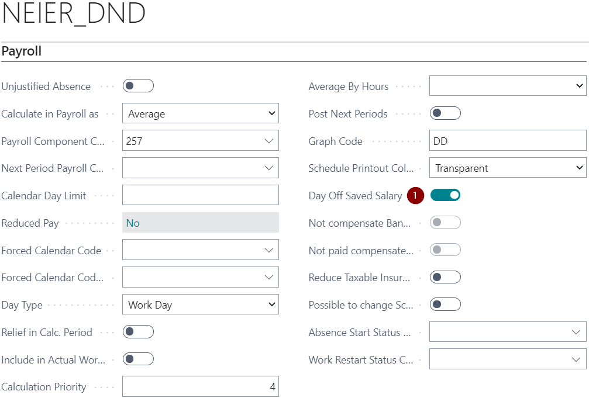
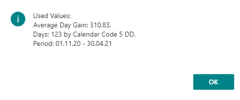
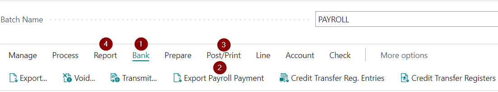
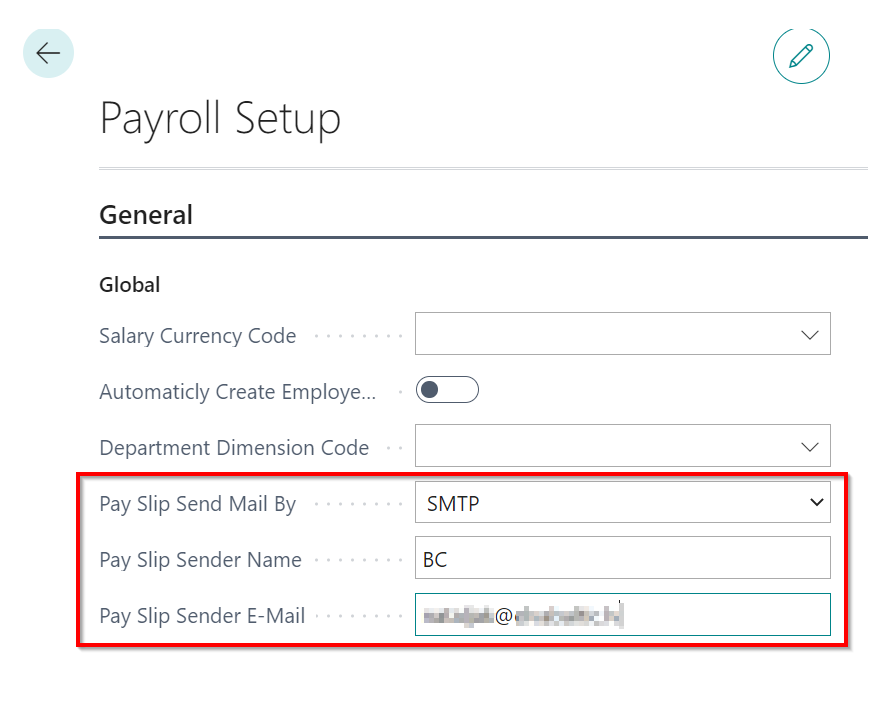
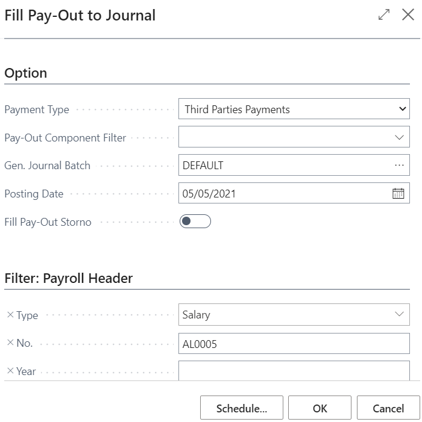

How to get started
To start using Dynamics 365 Business Central Latvian Payroll Advanced, there is no need to choose a specific role center. Functionality will work from any role center. However, we recommend to use LV Payroll Role Center in which all payroll shortcuts are available on the home page and the work with payroll would be more convenient and faster.
Applying Configuration package
All the basic settings for use of Latvian Payroll Advanced are created by applying the configuration package.
To apply the configuration package, click the button Search. Then type in the search field Configuration packages (1) and select from the list (2).
At the Configuration package window, click on buttons Process - Import Package and select the relevant package file from your file storage. Select the loaded pack and click on the buttons Process and Apply Package.
Content of configuration package
The configuration package enters the following information in the system:
- Number series and the rows
- Payroll setup
- Vacation period setup
- Additional vacation day setup
- Statistical report setup Work-2
- Statistical report setup Work-5
General system setup
In the Company information settings, the following fields are mandatory:
- Company name
- Registration No.
In the Bank Accounts section, the bank account card for payroll payments will be loaded with the configuration package. The following fields are mandatory in this card:
- SWIFT code
- IBAN
In the Chart of Accounts section, accounts that are essential for the payroll will be loaded with the configuration package. If necessary, these accounts are recommended to be renumbered/ renewed so that the adjustment settings should not be adjusted.
In the Dimensions section, dimensions that will be used for payroll should be entered.
Setup
Settings relevant to salary calculation are included under the section Administration from the LV Payroll Role Center shortcuts, or entering the required settings name in the system search.
Payroll dimension setup
Only the dimensions that will be specified in the payroll dimension setup will be used in the salary calculations, the rest will be ignored.

| Field name | Description |
|---|---|
| Dimension Code | Selects the dimension from the list that will be used in salary calculations. |
| Value From | Indicates the level from where the dimension will be taken: a) Source – Absence Registration, Payroll Components, Payroll Component Register; b) Payroll component – The specified dimension code is taken from payroll components; c) Employee Position – The specified dimension code is taken from employee position; d) Employee – The highest level, the specified dimension code is taken from the employee's card. |
| Don't Use Hierarchy | If there is no checkmark in this field, the specified dimension code is searchable at higher levels. If there is a checkmark, then only in the selected level. |
| Blank Value Allowed | Check if the dimension value is not an empty value after the settings specified above. If there is a checkmark in this field, then system will not give the error message, if in none of the levels (at a particular level if there is a checkmark in the field not to use a hierarchy) dimension will not be found. |
Dimensions for the departments and positions
The system offers the ability to add numerous dimensions to each department and each position. Creating a personnel order (for an employment, change of position), the specified default dimensions are added to the employee's position.
Assigning Dimensions to the department:

or if it's only one dimension, it can be assigned directly in the list:
Assigning Dimensions to the position:

If the dimensions are assigned to departments and positions have another dimensions, then the employee's post shows all (those indicated at the position and those specified in the position).
Tip
It is not advisable to specify the same dimensions, but with different values both at the department and position.
Payroll Setup
When loading the configuration pack, the standard settings are already filled; however, we recommend to review all settings according to your business needs.s.
Tab: General
| Field name | Description |
|---|---|
| Salary Currency Code | Indicates salary currency code. In case salary are calculated in local currency, the field should be left blank. |
| Automatically Create Employee Position | Enable if a new employee position card should be created automatically. |
| Department Dimension Code | Indicates the default dimension code. |
| Pay Slip Send Mail By | Indicates how the salary pay slip sent – according to required setup. |
| Pay Slip Sender Name | Indicates the sender name who sends out salary pay slips. |
| Pay Slip Sender E-Mail | Indicates e-mail, through which salary pay slips are sent out. |
| No Justif. Absence 12M Check for Average | This feature works if “Curr. Month in Avg. Gain if Period not Full” is enabled. If the feature is not enabled, the current month is not picked up if the eligible absence is less than 12 months, but in case if absence is more than 12 months, the current month will be included in the calculation of the average earnings. |
| Use Curr. Month in Avg. Gain if Period not Full | Enable if in case of half period, current month should be included in the average gain calculation. |
| Average Gain Precision | Indicates accuracy (decimal places) with average earnings is calculated. |
| Average Abs. Code For Report | Absence code for average earnings. |
| Bank Holiday Coef. | The coefficient is used to calculate the premium for working hours in bank holidays and weekends/holidays. |
| Night Pay Coef. | The coefficient is used to calculate the premium for night shift hours. |
| Overtime Coef. | The coefficient is used to calculate the premium for overtime. |
| Income Tax Lvl 1 Income Limit | Level 1 limit. |
| Income Tax Lvl 2 Income Limit | Level 2 limit for employees with A1 certificate. |
| Income Tax Global Base Code | Is used for relief to switch to another level. |
| Default Calendar | Calendar stated by legislation for 5 Business Day week. |
| Default Calendar 6DDN | Calendar stated by legislation for 6 Business Day week. |
| No Uncalc. Relief Transfer | Enables if inappropriate reliefs don't need to be carried over to the next month's salary calculations; Inappropriate reliefs are carried over through the component register, that is created at the moment of calculation . If at the time of calculation there was a sign that you do not need to carry out inappropriate relief, then there will be no component registry record and next month they will not be taken into account. |
| Compensated Bank Holiday Hours Enabled | Enables if it's necessary to compensate holiday hours, what falls into working days, if the employee have a monthly salary. |
| Compens.Bank Holiday Hours For Empl./Terminat. | Works only if function Compensated Bank Holiday Hours Enabled is enabled. Enables if it's necessary to compensate holiday hours, what falls into working days, if the employee has been hired/terminated in the current month. |
| Child Care Absence Filter | The appropriate absence code. |
| Absence Code for Correction | Absence code for salary conversion rows of absence registration. |
| Vacation Day Type | Indicates how the vacation days are accounted - in working days or calendar days. Provided in cases where no vacation periods are not used. |
| Vacation Days per one Period | Specifies the number of vacation days that belongs to each employee in one period. |
| Vacation Paid Days | Indicates the number of vacation days to be paid to each employee in one period. |
| Default Hour Qty. For Vacation/Average Calculation | Indicates the default one-day hours, who is used in compensation calculations, also in average gain. |
| Allow Detailed Payment Posting | The mark in this field indicates that the salary payment will be recorded in detail, not grouped all in one amount. Salary payments are exported to payment journal and the user can post with a standard posting for each employee separately. In this case, in the general ledger can be seen each employees' earnings. Therefore, a second accounting feature for salary is provided, which can group by dimensions and then post the payments. |
| Employers Soc. Tax Acc. Type | Specifies the type of account in which the calculated employer's social tax will be posted. |
| Employers Soc. Tax Acc. No. | Indicates an account in which the calculated employer's social tax will be posted. |
| Salary Pay Date | Indicates the payment date of salary, what will be indicated in the Salary list header and employer reports for State Revenue Service. |
| Advance Pay Date | Specifies the date of the advance pay that appears in the header of the advance list. |
| Bank Journal Template Name | Indicates the journal through which payroll payments from the bank will be made. |
| Next period Deduction Component | A payroll component used in case of Correction. In case if payment from the salary list already made, then in the currents' month next salary list, this payment will be under this indicated payroll component code. |
| No System Component Registers | Indicates if in the salary calculations shall not be used the system-generated component registry entries. In case when the adjustments are required, but the function is enabled, when calculating, the changes are displayed, but the registry will not be built. |
| Schedule by Default | If enabled, then creating a new employee position or changing it, Automatically fill in field Schedule / Accounting. This ensures that the salary calculation of the employee concerned is only successive by the Schedule/ Accounting. |
Tab: Numbering
| Field name | Description |
|---|---|
| Salary Nos. | Indicates the salary list no.series. |
| Prepayment Nos. | Indicates prepayment no.series. |
| Advance Nos. | Indicates the advance list no.series. |
| Correction Nos. | Indicates the list of corrections no.series. |
| Employee Position Nos. | Indicates employee position no.series. |
| Component Register Nos. | Indicates salary component registry no.series. |
| System Component Register Nos. | Indicates system component register no. series. |
| Employee Insurance Nos. | Indicates employees insurance number series |
| Position Nos. | Indicates system post registry no.series. |
| Work-2 Nos. | Indicates Work-2 report numbering. |
| Schedule Nos. | Indicates schedule registry no.series. |
| Accounting Nos. | Indicates the accounting register no.series. |
| Bank Payment Nos. | Indicates bank salary payment no.series. |
| Bank Export payment Nos. | Indicates payment document no. on bank file |
| PFPIS Nos. | Indicates the no. series for report of the amounts paid by the natural person |
| Salary Book Import Nos. | Indicates import no.series. |
Tab: Components
| Field name | Description |
|---|---|
| Advance Payroll Component Code | The specified payroll component from the advance list will be included in the salary list as a deduction. |
| Prepay Payroll Component Code | The specified payroll component from the Prepay list will be included in the salary list as a deduction. |
| Minimum Salary Component Code | Indicates minimum salary payroll component. |
| Negative PayOut Component Code | Indicates the negative payout payroll component. |
Tab: Insurance
| Field name | Description |
|---|---|
| Without Taxes Insurance Code | Must be specified to the appropriate payroll component. This setting is configured creating a new database and it is not recommended to modify this setting without ELVA specialist advice. |
| Deduction Insurance Code | Must be specified to the appropriate payroll component. This setting is configured creating a new database and it is not recommended to modify this setting without ELVA specialist advice. |
| With Taxes Insurance Code | Must be specified to the appropriate payroll component. This setting is configured creating a new database and it is not recommended to modify this setting without ELVA specialist advice. |
| Insurance Salary Base Code | Corresponding salary base code. This setting is configured creating a new database and it is not recommended to modify this setting without ELVA specialist advice. |
| Insurance Limit Percent | The percentage of the amount of insurance premiums defined by law from the payer in the calculated gross salary pay per year, which excluded from payer's income, for whom pay the salary tax and state social insurance contributions (but no more than the amount of insurance limit).. |
| Insurance Limit Amount | After a legislative maximum amount of insurance premiums per year, which excluded from payer's income, For whom pay the salary tax and state social insurance contributions. |
Tab: Reports
| Field name | Description |
|---|---|
| Manager No. | Indicates the person who will sign the salary statements as manager. |
| Status Code Enabled | If this function is enabled, when filling in the date of recruitment or dismissal in the employee card, the system will automatically offer to enter the employee status code in the list Status codes, from which information for SRS report Information on employees is obtained. |
| Schedule Dimension Code | Dimension code for working time. |
| Symbol For DayOff In Schedule Report | Holiday sign in export file to Excel and Schedule Printout. |
| Executor No. | Indicates the person who will sign the salary statements as executor. |
| Income Tax in Calculation Period | Indicates that SRS report The employer's report on payed social and income tax presents the personal income tax for the current period. |
| Exclude Income Tax Clarif. | The tick works only if no tick is inserted in “Income Tax in Calculation Period”. In case if “Exclude Income Tax Clarif” is enabled, Employer's report will reflect the income tax amount of the previous calculation period in the income tax field. In case if “Exclude Income Tax Clarif” is not enabled, then the amount of income tax will include the income tax amount of the previous calculation period and the current monthly updates for the previous period. |
| PFPIS Default Income Type Code | It is used in the PFPIS report in case the employee was not granted benefits and no calculation was made because the employee was unpaid in absence. In this case, the default income code will be linked to the gain. |
| Soc. Tax Rep. Income Base Code | Indicates the revenue base for Employer's report. |
| Soc. Tax Rep. Soc. Tax Base Code | Indicates the social tax base for the Employer's report. |
| Soc. Tax Rep. Income Tax Base Code | Indicates the income tax base for the Employer's report. |
| Soc. Tax Rep. Risk Base Code | Indicates the risk fee base for the Employer's report. |
| Soc. Tax Rep. Pension Base Code | Indicates the pension contribution base for the Employer's report. |
| Soc. Tax Rep. Solid. Tax Base Code | Specifies the solidarity tax base for the Employer's report. |
| Company is a Startup | Attribute for Employer's report. |
| Stat. Group Change Status Code | Status code for reports in case of position change. |
PFPIS easing
The codes that distribute PFPIS report after the applied easing. Codes and titles to be introduced according to SRS methodological material Notifications of natural persons paid amounts and their completion procedure.
| Field name | Description |
|---|---|
| Code | Easing code. |
| Name | Easing name. |
| Base | Choose a easing base, what includes the appropriate easing. |
Overtime Setup
In order to make correct overtime calculation in the system, the following settings must be set:
| Field name | Description |
|---|---|
| Salary type | Chooses what salary calculation type will be used in overtime calculation: a) 5 Day Work Week; b) Aggregated Working Time. |
| Empl. Calendar Code | Specifies the calendar that will be used in overtime calculation. |
| Start Month | Indicates overtime calculation starting month.Designed for the aggregated working time if the beginning of the reporting period differs from the beginning of the year.In all other cases, January. |
| Date formula | Indicates the period for which overtime will be calculated. |
| Limit Type | Specifies the type from which information about hours worked will be taken: a) Hours - selects if the number of hours should be specified; b) Calendar - Calendar will be used as base for the calculation of overtime. |
| Limit Hours/Calendar | If the type calendar is selected, the corresponding calendar from the list is selected. If the type is hours then indicates the number of hours starting from what overtime should be calculated. |
| Description | A freely recordable explanation. |
| Proportional | Select, if Limit Type is calendar and overtime should be calculated only from work time. The calculation also takes into account the absence and recruitment date. |
| Default Usage Type * | Select: a) Pay Out; b) Day Off; c) Vacation Add.Day. |
| Absence code for use of Day Off * | select the code VIRS_ATPUT. |
| Months Qty. For DayOff Usage * | Indicates how many months ago need to look for available overtime, which will be used as a day off. |
| Hours Qty. For Day On Vacation * | Specifies the number of overtime to assign an employee one additional vacation day. |
*Fields designed for overtime compensation. Detailed process description in chapter Overtime compensation with rest time.
Employee Posting Groups
Employee posting groups are used when amounts obtained in payroll calculation must be distributed between different general ledger accounts (for example, administration payroll costs and worker payroll costs ).
| Field name | Description |
|---|---|
| Code | Employee posting group code. |
| Payables Account | Specifies the ledger account to be used by booking creditors' debts to employees in this posting group. |
To view all payroll postings on one page, on the Employee posting groups toolbar press a button Posting Setup.
| Field name | Description |
|---|---|
| Employee posting Group Code | Employee Posting Group Code. |
| Payroll Component Code | Indicates a payroll component to what stated accounts are assigned. |
| Payroll Component Description | The name of the payroll component. |
| Account Type | Account type for fields Accounts No. and Social Tax Account. |
| Account No. | Account number. |
| Social Tax Account. | Employer Social Tax Account Number. |
| Salary Account No. | Correspondent Account. No editable field, only informative. |
| Posting Group Account Sign | Side of Account No. and Social Tax Account : Debit or Credit. No editable field, only informative. |
Positions
All positions used in the company are listed in Positions. A separate card must be created for each position. Positions are not hierarchically structured, which means that they are not added to a certain exposure.
In the Position Card, by clicking on Process, Risk Factors to this current position can be identified, as well the Briefings can be set. If information in the system about the profession code is updated and department code is added, then, to show these changes in the employee card as well, the function Update Employee Positions should be activated.
You can add dimensions to the position by clicking Navigate and choosing the function Dimensions.
Position card includes the following fields:
| Field name | Description |
|---|---|
| Code | New position's code. |
| Description | Positions title. |
| Profession Code | Code from Employee Statistic Groups. |
| Department Code | Code from Departments. The department code can't be changed afterwards, therefore it must be correctly entered initially. |
| Department Description | Description from Departments. |
| Total Loading | Total loads that are expected for this position. |
| Current Loading | Loads what are currently occupied in the company. |
| Current Employee Count | Number of employees employed in a particular position. |
| Vacant Loading | How many workloads are still vacant for this position. |
| Date Created | The date when the position was created. |
| Date Closed | Position close date. |
| Salary Amount | Informative field. |
| Vacation days | Define how many annual vacation days are required for this post. |
| Add. Vacation days | Define how many additional annual vacation days are required for this post. |
| Work Time Undeterminable | Note if the job time is undetectable and subordinated to the company's needs. |
| Labor Contract Templ. | A specific labor contract template can be attracted to this position. |
Departments
In the system, structured information about the departments can be maintained. The maintained information will be both current and historical, because the structural units in the system are not deleted, but closed. Following fields are available:
- Code – department code defined by the user;
- Description - department name;
- Address – address where the department is located;
- Date Created – date when the department was created;
- Date Closed – date when the department is closed;
- Parent Department code – department code to which the department is subject;
- Manager Position Code - The corresponding manager position code from the list Positions;
- Department Dim. Value Code - Department dimension value code (the dimension that has been defined in Personnel Setup is used) from standard payroll dimension classifier;
- Decline Gender - choose Female or Male in order to set the declination of the department in the document templates.
To ensure the departmental hierarchy, sorting and indent methods are combined. Thus, one department is subordinate to another if it is after the main unit and has one level more indention. Depending on the depth of department indention and the number of departments, a department code shall be drawn up. Departmental indentions are created through function buttons in the Departments tool pane. For example, dividing the code into three parts „00-00-00”, the first part is the higher department level code, second and third respectively are the lower levels. At each level, under the same department, 100 lover departments can be created.
For Example:
00-00-00 Management – 1st level
00-10-00 Finance – 2nd level
00-10-10 Accounting – 3rd level
This way, using codes, a method of sorting is provided. In addition, indentions are made according to the level.
Retirement age
To be able to select employees approaching retirement age, a retirement age must be defined in the system.
| Field name | Description |
|---|---|
| From Date | Indicates from which date is in force these rules. |
| Gender | Indicates gender. |
| Retirement Age | Indicates the age of retiring. |
Social Statuses
In order for the system to correctly complete the report Report on state social insurance compulsory contributions, the following settings must be defined. Usually ELVA specialists prepare settings before users start using the system, but more knowledgeable users can add or modify these settings if needed:
| Field name | Description |
|---|---|
| Code | Social status group code. |
| Description | Description. |
| Default Status | When creating a new employee card, this code will be inserted by default. |
| XML SAMStat | Settings according to documentation issued by state Revenue service for creating an export file |
| XML DarbaVeids | Settings according to documentation issued by state Revenue service for creating an export file |
| XML Tab | Indicates in which section should indicate data on the particular social status. |
| Salary Books Import Pensioner Type | Is taken into account when importing employees' tax books. |
| Salary Book Description | Is taken into account when importing employees' tax books. |
Payroll Bank Account Setup
Defining setup is important for successfully exporting payroll payments from the system:
| Field name | Description |
|---|---|
| Payroll Bank Account No. | Payroll bank account is selected. |
| Description | Freely defined description. |
| Output File Type | The most commonly used is SEPA (xml format). |
| File Path | If you are using a type FIDAVISTA , then please leave a blank field. If you are using a type txt, then you must specify the folder where the file will be saved. |
| Separate Payments | Tick here, if you need to send a payroll payment for each employee individually as a separate document. |
| Group by Employee No. | Tick here, if a payout is made to one employee from multiple lists, then in the bank file a single record is created for one Employee No. |
Another mandatory condition - Must have a number series SEPA. This number series need to be assign Starting No. and Ending No. As well as placed a checkmark at Default Nos.
Payroll Analysis Templates
The templates to use for salary analysis may be defined in the system.
These settings are required for the report Payroll Analysis:
| Field name | Description |
|---|---|
| Code | Free-defined code. |
| Description | Description. |
| Column Values | You can sort data in the columns by Component Type, Calculation Month or Period Month. |
| Tab Lines | Chooses what data would like to show in lines: Type (income, relief, deduction etc.); Code (Payroll Component Code); Dimension; Employee. |
Salary Calculation Setup
In the chapter Administration, all functions required for the calculation of salary are included.
Payroll components
Tip
Usually most of these components are common to all companies and are prepared prior to creating a new database. Therefore, it is not recommended to delete and modify these values without consulting with ELVA specialists..
Salary calculation is made from different salary components – incomes, deductions, reliefs, taxes, etc. In each payroll component card, for more convenient maintenance of the payroll bases two buttons are available: Related Bases by type and Related Bases by Code. In this way, it is possible to quickly select bases that are using this particular salary component.
Tab: General
| Field name | Description |
|---|---|
| Code | Freely defined code. |
| Type | Select the appropriate type from the list. |
| Description | Freely defined component name. |
| Priority | Specifies the priority of the component in the payroll calculation process – the smaller the number, the higher the priority. Thus, this component will be included in the salary calculation sooner. Priority falls automatically when you create a new payroll component, it is not advised to change the value on your own. |
| Calculation Method | Choose from the list how the component will be calculated. |
| Quantity Type | It is necessary to specify which units of measure to be used when calculating overtime in the timesheet.. |
| Valid Until | Until what date the component is in effect. |
| Validity Explanation | Freely definable text that will be reflected in the calculation of salaries in the error message in case the component is not already in force. |
| Social Status Code | Provide a social status code for the social tax component. |
| Default Component | Enable if this component fills in automatically when you create payroll components on the employee card. |
| Dependant Count | Is filled in case it is a relief component regarding dependants – inserts the appropriate number of dependants. |
| Disability Group | Is filled in case it is a relief component regarding disability – fills in the appropriate disability group. |
| Global Dimension Code 1 | If necessary, indicate the 1st global dimension for the salary component. |
| Global Dimension Code 2 | If necessary, indicate the 2nd global dimension for the salary component. |
| Hide in Pay Slip | Enable if the information about this payroll component will not be printed in the pay slip. |
Tab: Additional Info
| Field name | Description |
|---|---|
| Net Amount | Enable if the net amount is used in the calculation. If the net component has an amount with a negative sign, this amount will be considered as a gross amount. |
| Overtime Component Code | Specifies the attached Overtime payroll component. |
| Bank Holiday Component Code | Specifies the attached Bank Holiday Hour payroll component. |
| Night Pay Component Code | Specifies the associated Night Hour Payroll components. |
| Compensated Hour Comp. Code | Specifies the payroll component that is used in the payroll with hourly rate calculation to compensate the bank holiday hours that fall during normal working hours and the employee did not work on that day. |
| Over Annual Limit Comp. Code | Specifies the payroll component code that will be used in the payroll calculation if the limit for this component is exceeded. |
| Relief Available Amount Base | Base that defines the amount of relief for a given component. |
| Uncalc. Relief Comp. Code | Specifies the payroll component code that will be applied to transfer uncalculated reliefs to salary calculations for the next months. |
| Income Tax Lvl2 Component Code | Income Tax level 2 Base Code. |
| Income Tax Lvl3 Component Code | Income Tax level 3 Base Code. |
| Always Use Calculation Period | Enable if it is necessary to use the current calculation period for income tax calculation. |
| Split To Related Components | Enable if components are formed from setup (base amounts) and are divided according to the components that are in the base amounts. |
| Base Salary | Enable if this component is recognized as a base salary component. |
| Bank Holiday Pay in Vacation | Enable at the basic salary component cards if you want that payment for bank holidays (which falls on an employee's work day) to be calculated during vacation. If a bank holiday falls during vacation, the system reduces the number of days taken by the holiday by these days. |
| Nonworking Bank Holiday by Average | Enable at the basic salary component cards if you wan to pay average salary, for a worker's holiday falls on a bank holiday that falls on a working day according to the national calendar. To calculate average earnings per day, the check mark must be at Allow Bank Holiday Hours what is located at employee card's section Employee Payroll components. |
| No G/L Posting | Indicates that the corresponding component data will not be posted to the general ledger. |
| Salary Account No. | Indicates the corresponding general ledger account in which Payroll Payments will be posted. |
| Posting Group Account Sign | Indicates the side of the posting group: debit or credit. |
| Include Zero Amount | Enable if you want to create a payroll line with 0 amount (there is no possibility to deduct the amount, but there is a possibility that the user can adjust the amount of the deduction). It is necessary to generate a queue to be able to transfer money to third parties. |
Tab: Posting
| Field name | Description |
|---|---|
| Employee Posting Group Code | Selects from the list to which group this component applies. |
| Account Type | Selects from the list. |
| Account No. | Payroll account number is selected from the chart of accounts (or vendor/customer if the type is vendor/customer). |
| Social Tax Account | Specifies the Account Number of the Employer's Social Tax (DDSN) Cost. DDSN can be posted to different cost accounts specified for each employee posting group. |
Tab: Setup
| Field name | Description |
|---|---|
| From Date | Indicates the date from which this value is valid. |
| Amount | Indicates a value if it is constant. |
| Calculation Type | Indicates whether the value entered will be an amount or a percentage |
| Base | If percentage is selected, indicate the base from which amount the percentage will be calculated. |
| Base Annual Limit Amount | The limit is indicated, after which no calculations are made. |
| Description | Free field to fill. |
Bases
Bases are settings that determine the calculation of various salary components - vacation, sick leave, as well as algorithms for calculating some reports. These amounts can be defined as needed. Each base has its own card and all base cards are grouped in the Bases list.
Following fields are available at the each base card:
Tab: General
| Field name | Description |
|---|---|
| Base Code | Freely defined code. |
| Description | Freely chosen description. |
| Related Payroll Component Code | This functionality is intended for extended filtering of data. If the Related Component code is specified for the base, then only the rows from the payroll component rows are counted, where the component code or the related component code coincides with the base component related component code. There are limitations to the related component (for gathering correct PFPIS), therefore it is highly recommended to consult with ELVA consultants. |
| Income Tax Lvl Filter | If percent rate is selected, indicate the basis from which the (base) amounts will be calculated the percentage. |
Tab: Setup
| Field name | Description |
|---|---|
| Plus Type | Indicate the types of components that will be included in the calculation of the amount of base. |
| Minus Type | Indicates the types of components that will be deducted from the amount of the base. |
| Plus Code | Indicate the specific components that will be included in the calculation of the amount of the base. |
| Minus Code | Indicate the components that will be deducted in the calculation of the amount of the base. |
In addition, in each table, it is possible to indicate the date from and until which the relevant component or component type operates in the calculation. This data is preserved in history.
Causes of Absence
To register an absence, Causes of absence codes are necessary. All reason codes are initially imported into the system via the configuration package and are listed in thr Causes of absence. The code card can be opened by clicking on the required line of code and pressing the buttons on the toolbar Actions - New document - Card.
It is not recommended to do any changes to the reason codes and their settings.
Tab: General
| Field name | Description |
|---|---|
| Code | Freely defined absence code. |
| Description | Description of absence. |
| Unit of Measure Code | Selects from the list. |
| Total Absence (Base) | The system shows how many times this absence is registered. Taking into account that this is a standard Microsoft field that is not maintained, it always shows zero. |
| Create Payr. Paym. By Defaul | Calculate the salary before absence, by establishing an absence register absences with appropriate absence code (Absence code indicated in Payroll Setup). |
Tab: Payroll
| Field name | Description |
|---|---|
| Unjustified Absence | Sign of unjustified absence. |
| Calculate in Payroll as | Selects from the list how the absence is calculated: 1. Average – the calculation period is taken first in the previous 6 months, if not, then in the previous 12 months. If not, the program checks Payroll Setup, is there a check mark in the field Use Curr. Month in Avg. Gain if Period not Full. If this field is not checked, then the average of the minimum wage is calculated; 2. Keep salary separated – the calculated basic salary will be retained for the selected period, the amount being divided into another salary component; 3. Keep Salary – for the selected period nothing changes in the calculation of the basic salary (for example: justified absence); 4. Prepayment – pays basic salary as Prepayment for the selected period (vacation ahead); 5. No Salary – no salary is calculated for the selected period (for example: unpaid vacation, unjustified absence); 6. Without Relief – Does not calculate salary and benefits (for example: sick leave B); 7. Blank – overrides in the payroll calculation. |
| Payroll Component Code | Indicate the corresponding salary component. |
| Next Period Payroll Comp. Code | Indicate the component if the payment for the next period is allocated to another component. |
| Calendar Day Limit | Indicates the number of days of cause of absence (for example, sick leaves, business trips), to warn of exceeding the limits. |
| Reduced Pay | Indicates reduced rates by day (for example.: how sick leave is paid). Click on the field link to set. |
| Forced Calendar Code | Selects the default calendar according to which the calculation for a specific absence will be performed. |
| Forced Calendar Code 6DDN | Selects the default calendar to calculate for a specific absence according to a six-day calendar. |
| Day Type | Indicates the type of absence calculation by days (periods): - Work Day; - Calendar Day; - Manual - the number of days does not depend on the period. |
| Relief in Calc. Period | A checkmark in the field indicates that the relief will be calculated this month. If there is no check mark, it will be carried forward. (for example: long vacations for teachers). |
| Include in Actual Worktime | If there is a check mark, then the days are considered as actually worked (for example: a business trip). |
| Calculation Priority | Indicates the sequence number of the cause of absence code in the chain of salary calculation activities - the lower the number, the higher the priority. Priority can be given to both - salary components and reasons for absence. If the salary component comes from an absence record (for example: compensation of unused vacation.), then priority is taken from the cause of absence. |
| Average By Hours | You can choose between: leave blank, Only SDL ( for the aggregated working time), all. |
| Post Next Periods | A check mark is placed if part of the next period of the temporary absence is booked to the expenses of the next period. |
| Graph Code | Indicates a freely chosen code that will be used to indicate this type of absence in the schedule printouts. |
| Schedule Printout Colour | Selects the color in which the absence days are marked in the schedule printout. |
| Day Off Saved Salary | Used when an employee is given a holiday that must be paid according to the principle “Keep salary”, but not included in real time (for example: blood donor days). If enabled, then value in the field Calculate in Payroll as must be Average. |
| Not compensate Bank Holiday Hours | Enables if holiday hours what falls into working hours included in absence period will not be offered to compensate. |
| Not paid compensated Bank Holiday Hours | Enables if during the period of absence, the holiday hours included in the absence would not be added to paid days together with base salary. |
| Reduce Taxable Insurance Amount | Points out that this absence reduces the amount of insurance taxable by the sum of the year. |
| Possible to change Schedule | If enabled when entering an absence code, the system will display the planned work schedule. If necessary, you can correct the hours to be paid. |
| Absence Start Status Code | Specifies the status code that will be displayed in the report Information on employees (Employee social sign codes) in connection with the beginning of the absence. The employee status code will be filled in the system after entering the start date of the absence. |
| Work Restart Status Code | Specifies the status code that will be displayed in the report Information on employees (Employee social sign codes) in connection with the end of the absence. The employee status code will be filled in the system after entering the end date of the absence. |
Tab: Vacations
| Field name | Description |
|---|---|
| Influence on Vacation | Indicate the effect of the absence on the balance of annual leave. |
| Vacation Compensation | Vacation compensation feature. Used in the Vacation Compensation Code Card. |
| Day Count/Threshold | Determines the amount of days/threshold. |
| Reduce Including Threshold | Enables if the component decreases including the threshold. |
| Additional Vacation | Enables if the component determines an additional vacation. |
Calendars
The calendar is the basis for all calculations. In each employee's position card, a working time calendar code must be indicated. The calendar is used to calculate working days and hours, as well as to calculate planned working days and hours per month - in cases where individual schedules and accountings are not used.
Tab: General
| Field name | Description |
|---|---|
| Code | Freely defined code. |
| Description | Freely chosen description. |
| Bank Holiday Calendar Code | A holiday calendar code that is linked to this specific calendar. |
| Bank Holiday Calendar | Mark that this calendar is a bank holiday calendar bank holiday calendars only). |
| Work outside working days | Notes that employees also work on weekends. |
| Cycle Calendar | Mark if this calendar is created as a cycle calendar. |
| Cycle Start Date | Defines the first day of the cycle calendar. |
Tab: Calendar Summary
Calendar entries show information about each day, taking into account the associated bank holiday calendar. If a bank holiday calendar is specified in the title of the calendar, then all holidays apply to that calendar as well. Changes can be made to each calendar individually - transfer specific working days, shorten working hours for working days before the holidays, indicating specific dates. In case a holiday falls in a normal working week and should be compensated, this information can be registered in the tab Calendar change ListPart.
Tab: Calendar Change ListPart
| Field name | Description |
|---|---|
| Recurring System | Period of the year (commonly used for bank holiday calendars), Period of a week or Cycle. |
| Date | If necessary, indicate a specific date (commonly used for bank holiday calendars). |
| Day | Specifies the name of the day of the week. |
| Cycle sequence number | If the recurrence is Cycle, identicate the cycle sequence No. |
| Description | Freely chosen description. |
| Nonworking | Check whether a given day is a day off. |
| Bank Holiday | Mark whether a given day is a bank holiday. |
| Work Hours | Indicates how many work hours are on a particular day. |
| Night Hours | Indicates how many night hours are on a particular day. |
| Compensated Hours | Indicates how many hours will be taken into account when calculating the compensation of the holiday, as well as if the holiday falls for the employee on the planned workday and the employee does not work on this holiday. |
The number of weekly working hours that repeats every week must be entered in this tab, and it determines the structure of the overall calendar planned working hours. In addition, you must enter the working days when working hours differs from normal work weeks in a separate new line (by indicating the date), for example, working days before bank holidays and moved working days due to bank holidays. In case a public holiday is moved to another day (for example, 18 November or 4 May), this information must be entered in the calendar with the type Holiday and with indicated compensated hours.
Tab: Calendar Year ListPart
In case the employee has the aggregated working time and the base salary in proportion to the hours, the year and the average number of hours per month are indicated. The average number of hours per month is taken into account for the calculation of the hourly rate. This rate is used for night hours, overtime, public holidays, holiday / hourly compensations.
Bank Holiday Calendars
The system creates a standard holiday calendar with already set holidays, which repeats every year on the same date (for example: Christmas, Midsummer, etc.). Bank holidays that do not repeat on the same date (for example: Easter, Mother's day, Pentecost, and postponed public holidays as well) must be added manually each year.
Tab: General
Only fields Code and Description are filled, and embedded a feature Public Holiday Calendar as well. The other fields on this tab are inactive and are filled in by the system.
Tab: Calendar Summary
Calendar entries show information about each day, taking into account all registered changes.
Tab: Calendar Change ListPart
If the holidays repeat on the same dates each year, the Recurring System field is selected as Annual Recurring and the corresponding settings are made. If the holidays do not repeat on the same dates each year, then Recurring System fields is left blank and the corresponding settings are made.
PFPIS income types
PFPIS income types are defined according to the SRS methodological material Notifications of natural persons paid amounts and their completion procedure.
PFPIS income type card.
Each PFPIS income type card includes the following fields:
Tab: General Info
| Field name | Description |
|---|---|
| Code | Income type code from SRS (State Revenue Service) methodological instructions. |
| Period Length | Year or month. |
| Period Shift | Indicates or is offset if the payment differs from the calculation period: No Shift; -1 Month (For example, the PFPIS list on August will be subjected to natural persons estimated income for July); -2 Months. |
| Use Easing | If there is a mark in this field then indicates that the code needs to use relief. |
| Income Type Name | The name is entered according to the SRS Methodological material. |
| Only Company contract | Notes that in the corresponding code shall be entered only in case of company contract. |
| Skip Non-Residents | If there is a mark in this field then non-residents will not be displayed. |
| Only Royalty | Only royalties will be displayed. |
Tab: Amount Setup
The relevant field shall indicate the appropriate base, that will calculate the value of the appropriate field in the report.
Component Register Export Filters
In the Component/Register Export filter, it is possible to filter (button Generate Filters (1) or enter manually by clicking on Edit) information about employees, payroll components, dimensions that is to be included in the Component Register import template. To create a component registry import template, press the button Export to Excel (2).
Using this template, you can import data to the Component Register. Attention should be paid that the dimensions with values are generated in 2nd row, so data should be entered starting from 3rd row.
Employees Card
Fields marked with an exclamation mark "!" at tab Field type are mandatory.
Tab: General
| Field Name | Field Type | Description |
|---|---|---|
| No | ! | Fills in automatically. |
| First Name | ! | Employee's name. |
| Middle Name/Initials | Employee's middle name or initials. | |
| Last Name | ! | Employee's surname. |
| Search Name | Fills in automatically. | |
| Gender | ! | Gender of employee. |
| Company Phone No. | Free field for information. | |
| Company Email | Free field for information. | |
| Last Date Modified | Information field for controlling the amounts paid to the employee. | |
| Privacy Blocked | Enabled, if the employee has written a request to block information about him. In this case, this employee is not reflected in the relevant lists. | |
| PayOut Amount | Information field for controlling the amounts paid to the employee. | |
| Payment Amount Before Correction | Information field. | |
| Payment Amount | Information field for controlling the amounts paid to the employee. | |
| Remaining Payment Amount | Information field for controlling the amounts paid to the employee. | |
| Disallowed Congratulations | To be filled in if the employee does not want to post his/ her birthday after GDPR. |
Tab: Address & Contact
This tab lists addresses, phone numbers, email addresses, and alternate addresses. The number of alternative addresses can be unlimited. Fields are filled in as needed. If the employee wants to receive salary slips to the e-mail address, then the field Private Email is mandatory.
You can enter an unlimited number of alternate addresses for each employee. To do this, enter the code and the corresponding contact information in the Alternate addresses list. Next, one of the Alternate Address codes can be entered in the field provided on the employee card tab Address & Contact.
Tab: Administration
| Field Name | Field Type | Description |
|---|---|---|
| Employment Date | ! | The field will fill in automatically, where information is taken from Labor Contract card |
| Status | ! | Active, Inactive, Terminated. Active fills in by default. |
| Inactive Date | Planned date of termination, if an employee has been recruited for a limited period of time. | |
| Cause of Inactivity Code | Choose employee inactivity reason code. | |
| Termination Date | ! | Mandatory field when terminating an employee. |
| Grounds for Term. Code | Indicates the ground for termination code when terminating the employment. For the purposes of analysis, countless ground of termination can be created and maintained, what later can be used in personnel orders of terminations. The list of Grounds for Termination can be found with system search function. In addition, you can define and maintain countless reasons for termination. The list of reasons for termination can be found in the system search function by typing a name Termination Reasons. | |
| Emplymt. Contract Code | Indicate the code of the employment contract related to the employee. | |
| Resource No. | Indicates the employee resource number. | |
| Salespers./Purch. Code | Indicates the code assigned to the employee who is the seller or buyer. | |
| In Trade Union | Enables if the employee is a member of trade union. |
Tab: Personal
| Field Name | Field Type | Description |
|---|---|---|
| Birth Date | ! | Indicates the employee's date of birth. |
| Social Security No. | ! | In case of a non-resident, NMR code assigned by the Republic of Latvia. In case the personal identification code starts with 32, the date of birth will not be filled in. |
| Previous Social Security No. | ! | If a new personal code is entered in the Social Security No. field, the previous personal code will be automatically copied to the Previous Social Security No. field. Make sure that the previous personal identification code is copied in the field Previous Social Security No, prior to that the field Previous Social Security No must be blank. |
| Union Code | If the employee has joined an association. | |
| Union Membership No. | Required field when releasing an employee who is a member in an association. | |
| Residence | ! | Resident fills in by default. In case the option is selected Nonresident, then for non-residents the income tax will not be filled in in the report of employer. |
| Nonresident ID Code | Indicate the personal identification code assigned to the non-resident. | |
| Working Permit Date | Indicate the date until which the work permit is valid. |
Tab: Payments
| Field Name | Field Type | Description |
|---|---|---|
| Employee Posting Group | ! | Selects an employee posting group from the list. |
| Application Method | Specify how to apply payments to this employee. | |
| Bank Branch No. | Indicate the name of the bank branch of the employee's salary account. | |
| Bank Account No. | Specifies the employee's bank account to which the payroll payment is to be made. | |
| IBAN | ! | International code of the employee's bank account to which the salary payment is to be made.** |
| SWIFT code | ! | Bank SWIFT code. |
Tab: Payroll
| Field Name | Field Type | Description |
|---|---|---|
| Social Status Code | ! | Selects the employee status code from the list. |
| Company Contract | Enable if the employee works under a company contract. | |
| Royalty | Enable if the employee receives royalties. | |
| Test Period | Indicate the length of the test period. For example 3M. | |
| Test Period End Date | The value is filled automatically based on the recruitment date and the specified test period length. If personnel module is enabled, then the value is also settled from the labor contract, if the test period was indicated there. | |
| Vacation Day Correction | This field is used to enter the balance of accrued vacation days. Day amount with minus sign to add the day and plus sign to reduce the remaining vacation day balance. Supposed to use for the initial data transfer to the system. | |
| Average by Hours | If the calculation should be made taking into account the hours. | |
| NonResident Income Type | Indicate if the employee is a non-resident. |
Tab: Employee Positions
An essential part of an employee card are employee positions!
This tab specifies the parameters required for the calculation, such as the calendar, the date of appointment, the title of the position. Completion of position information is carried out through labor contracts or personnel orders. Employee position No. is assigned automatically, by creating a new employees' position card. Numbering is required for the system to correctly calculate the salary in case an employee has changed their position. In case of a position change, a new employee position is automatically assigned to the new position number.
Dimension to the position can be assigned by opening the Employee's Position Card and clicking the button Dimensions, or by selecting the desired position (if several positions are assigned), clicking on the function menu (1) and pressing on the button Dimensions-Single (2) as it shown in the picture below.
When pressing the button View (3), a new window will open - Employee Position Card in which the following fields are available:
| Field Name | Field Type | Description |
|---|---|---|
| No. | The numbering of the employee's position is necessary for the system to be able to correctly calculate the salary in case the employee's position has changed. In case of a change of position, the new position is automatically assigned a new Employee position number. | |
| Employee No. | Selects an employee from the list. | |
| From Date | The position takes effect on a date specified in this field. For the first employee position, this field is filled in by the recruitment date by default. | |
| To Date | Indicate if the position has a known expiry date. | |
| Planned To Date | Indicate if the post is planned to expire. | |
| Position Code | ! | Selects an employee's position from the job list. |
| Position Description | ! | The name is read automatically from the selected position card. |
| Department Code | ! | Selects the employee's department. |
| Primary Position | If the employee has several positions, then the main one among all positions must be indicated. | |
| Skip in Salary | In case of termination, this field is checked automatically as soon as the last Salary list has been created. | |
| Schedule/Accounting | ! | By completing this field, the employee's salary calculation occurs only successive by schedule / accounting; If this field is not filled, the calculation is based on the basis of working time calendar and changes can be made only with the help of an hour registry. |
| Salary Type | ! | Indicates the type of employee's salary calculation (normal or aggregated working time). |
| Loading | Intended for statistical reporting. | |
| Calendar Code | ! | Selects from a list of calendars. The calendar is the basis for all calculations. |
| Calendar Name | The calendar code is read automatically from the Calendar list. | |
| Cycle Calendar Setup | Appears information on cycle calendar, if it was indicated in the field Calendar code. | |
| Don't use def. vacation cal. | Do not use the default vacation calendar. | |
| Statistics Group Code | The appropriate code is selected from the position code classifier. | |
| Work Time Undeterminable | Indicate if it is not possible to determine the hours actually worked. | |
| Global Dimension 1 Code | If necessary, indicate the 1st global dimension. | |
| Global Dimension 2 Code | If necessary, indicate the 2nd global dimension. | |
| Labor contract No. | The labor contract number is specified. | |
| Personnel order No. | The personnel order number is specified. | |
| Personnel order line No. | The personnel order line number is specified. |
If necessary, it is also possible to assign dimensions to the employee position in the Employee Position Card.
Employee Payroll Components
The Payroll Components specify the tax, benefit, and deduction components that should be included in the employee's payroll calculation.
Salary components are created by recording the employee's labor contract.
Employee Payroll Components can be viewed by clicking on the buttons Process - Employee Payroll Components on the toolbar. By opening the component's window, only those payroll components will be visible (filtered) that are active on the current working date. To see all the components, you must remove the date filters. However, next time when you open the components again, actual data filter will be set back again. To review all historical data, it is recommended to use the system's filter Show all history data under the section All.
Employee Payroll Components is the place where the basic salary component as well as other regular additional income components should be indicated (additional pays, bonuses, rewards, etc., which are constant amounts each month, and lasts for a long period of time).The salary advance amount to be paid shall be specified in the advance component. If necessary, the lines are supplemented with information on reliefs - Dependents, Disability, Repressed.
Tip
In case the employee has submitted the salary tax book to the employer, this should be registered in the list Related information, which can be found in the toolbar by clicking on Navigate -Additional Info. For Payroll.
Payroll Components shall also include information on long-term deductions (writ of execution, alimony, fee for car use, etc). Deductions are recorded in the employee card only if they are constant amounts that are repeated each month. One-time deductions should be recorded in Component Registers.
Deductions - In the employee salary components, it is possible to specify the following information:
| Field Name | Description |
|---|---|
| Total Limit | Specifies the total amount of debt according to writ of execution. deductions will be ended above this amount. |
| Calculated Deducted Amount | Informative field. The system here represents the total amount deducted for this particular writ of execution (the total amount from all salary lists). |
| Month Limit | Indicates a minimum monthly limit. |
| PayOut Limit | Indicates the minimum limit of the employee's salary payment. |
| PayOut Limit Base | Indicates the limit base if a PayOut Limit is specified. |
If case after withholding the amount should be transferred to a third party to another bank account, you need to enter all bank account data in the employee card by clicking on buttons Related - Additional Info. For Payroll - Payment to third parties.
Copy Employee
The copying function is convenient to use if the employee after termination has been employed again in the company. However to avoid possible errors (for example, in the calculation of the average gain, SRS reports), it is advisable to create a new employee card. To start copying, you should first create a new employee card. In the employee card's toolbar press on Related - Creating Add. Info -Copy Employee. In the Options section, Source Employee No. must be selected, as well as note what information you would like to copy.
Additional employee information in the employee card
Qualifications
A qualification list of employees can be maintained in the system. Based on this, it is possible to keep track of when trainings and briefings need to be repeated (for example, using a report Employee qualifications).
Qualification codes are entered in a separate line, indicating the freely selected Code (1) and a Description (2). If in the field Qualified Employees (3) is a note Yes, then by clicking on the link (3) you can view a list of employees assigned this particular qualification.
Once all the information is entered, you can define the employee's qualifications. Open the required employee card and in the employee card toolbar select Related - Employee - Qualifications.

| Field Name | Description |
|---|---|
| Qualification Code | Code from the register Qualifications.. |
| From date | Date of qualification. |
| To date | Qualification due date. |
| Type | Select the origin: Internal, External, from a Previous Position. |
| Description | Description of the type of education, filled in from the qualification register. |
| Institution/Company | Name of the external qualification institution of origin. |
| Comment | A note that a comment has been added to the post. |
Relatives
Available by clicking in the employee card on the buttons Related - Employee - Relatives.
The following fields are available for entering information:
| Field Name | Description |
|---|---|
| Relative Code | Specifies a relative code to define the type of relative. |
| First Name | If necessary, the name of the person shall be entered. |
| Birth Date | If necessary, a relative birth date shall be entered. Children are recorded mandatory, because according to the specified age, the system offers to assign additional vacation days for children under 14 years of age. |
| Age | System filled field, defending of the value in field Birth Date. |
| Disabled Person | Indicates if the child has a disability. This will affect the number of additional vacation days calculated. |
| Phone No. | If necessary, enter the phone number. |
| Comment | A note of the fact that a comment has been added to the record. |
The collected information on relatives can be analyzed with a system standard report Employee Relatives.
The items assigned
Available by clicking on the buttons Related - Employee - Misc. Article Information at the employee card. In this register, all the material values assigned to the employee can be listed.
The following fields are available for entering information:
| Field Name | Description |
|---|---|
| Misc. Article Code | Specifies a code to define the type of miscellaneous item. |
| Description | Specifies a description of the miscellaneous item. |
| Serial No. | Specifies the serial number of the miscellaneous item. |
| From Date | Specifies the date when the employee first received the miscellaneous item. |
| To Date | Specifies the date when the employee no longer possesses the miscellaneous item. |
| In Use | Specifies that the miscellaneous item is in use. |
| Comment | Specifies if a comment is associated with this entry. |
Subsequently, registered data can be analyzed by a system standard report Employee Miscellaneous Article Information.
Confidential information
For each employee, if necessary, a separate register with information to be classified as confidential can be maintained.
The following fields are available for data entry:
| Field Name | Description |
|---|---|
| Confidential Code | Specifies a code to define the type of confidential information. |
| Description | Specifies a description of the confidential information. |
| Comment | Specifies if a comment is associated with this entry. |
Subsequently, registered data can be analyzed by a system standard report Employee Confidential Information.
Employee's Status Codes
In the Employee's cards toolbar, Related - Additional Info. For Payroll a function Status codes is available. There you can view and edit the social status codes associated with the employee, and, on this basis, the report Employee Social Sign Codes is prepared.
The social status code should be entered through the labor contract card, Employment personnel order card, Termination personnel order card and Position change order card. Status codes for maternity leave and non-payable vacation can be defined in Causes of Absence card's fields Absence Start Status Code and Work Restart Status Code.
Attachments
If necessary, files of any format can be added to the employee card (for example, CV, diplomas and other documents). Functionality is available in the employee card's toolbar Employee - Attachments.
Absences
All deviations from the planned working hours must be entered on a separate absence card. All absence cards are listed in the Employee Absences register. You can record new absence by pressing the button New. In the Tab General, Employee no. should be entered, as well as Cause of Absence Code and period from date To date this absence will last. Cause of Absence codes are defined in the Role Center - Absences - Cause of Absence.
There are 3 ways to enter absence:
- Complete the employee's absence card that will form a record in the absence register. Described in more detail in this chapter;
- Create a personnel order for absence that will set up the order and record in the Absence Register. Described in more detail in the chapter Personnel orders;
- Import sick leaves absences from SRS EDS, which will form a record in the Absence Register. Described in more detail in the chapter Sick-list import from EDS.
Registering a new absence
In the tab General must be indicated employee who is in absence, must be selected cause of absence code and set the period when the absence was registered.
| Field Name | Description |
|---|---|
| Employee No. | Employee selected from the list to register absence. |
| Cause of Absence Code | Code selected from the list. |
| From Date | Date from which the absence is valid. |
| To Date | Date until which the absence is valid. |
| Description | Name of Cause of Absence code, system generated field. |
Tab Payroll
| Field Name | Description |
|---|---|
| Unjustified Absence | Enable if the absence is unjustified and there is no need to calculate the payment. |
| Calculate in Payroll as | Settings from the absence list, system generated field. |
| Calculate in Year | The system enters automatically based on the date of absence. Editable field. |
| Calculate in Month | The system enters automatically based on the date of absence. Editable field. |
| Days | The system enters automatically, based on the calendar assigned to the employee. |
| Hours | The system enters automatically, based on the calendar assigned to the employee. |
| Skip in Prepayment | If enabled, the calculated absence fee will not be paid in Prepayments. |
| Related Payroll Line | The system automatically indicates if a related document exists for the entry. |
| Related Payroll Header | The system indicates automatically when an absence calculation is made. |
| Global Dimension 1 Code | Indicate the 1st global dimension, if applicable. |
| Global Dimension 2 Code | Indicates the 2nd global dimension, if applicable. |
| Related Entry No. | Absence linking function. If the employee has entered a series of absences, which must be calculated with the same average earnings, then this absence should be indicated in this field. |
| Keep salary with average | Enables if the average salary should be kept during the absence. |
| Day Average Gain | If you need to change the daily average earnings, enter it manually in the field before calculating. |
| Hour Average Gain | If it is necessary to change the hourly average earnings, enter it manually in the field before the calculation. |
| Average Gain Changed | The system enables it automatically if values are entered in the daily or hourly average gain fields. |
Some fields in Tab Payroll fills in automatically. Should pay attention to the Year (1), Month (2) – there must be a month in which the salary calculation should include the information from this absence card. Originally entering absence month is determined by absence's start date. If a transient sick list is submitted after the salary is calculated (salary calculation paid or posted), then the calculation can be made in the end of the sick list month. For correction records calculation month are indicated by default the next month, for which salary list has not yet been created.

Fields Related Payroll Header (3) and Day Average Gain (4) will be filled, when absence calculation will be made. If you need to change the average gain manually, this before calculating manually need to be entered in the field Day (or Hour) Average Gain (4, 5) (a mark in field Average Gain Changed (5).
Using the sick list A absence code SLIMS_A and entering the dates from and to, if in the position card is a mark at Schedule/Accounting, then the Schedule of a given month and employee is then automatically opened, and it is possible to enter the employee's planned working hours during the sick leave.
All entries in this absence register must also be included in the Accounting table, but if the Accounting table has already been created: Accounting – open the required accounting card - Process - Copy from absence Register. In case it is not done, when generating a salary list, the system as the primary will perceive the information specified in the absence registry, not what is included in the Accounting table.
In the Tab Vacation is shown the period, to what vacation is attributed to.
Vacation management
Vacation period setup
Vacation setup ( LV Payroll Role Center - Vacation Periods - Setup - Vacation Period Setup) consist of following fields:
| Field Name | Description |
|---|---|
| Enable Vacation Management | Enable if using vacation management. |
| Vacation Period Length | Specifies the length of the vacation period |
| Vacation Day Type | Calendar Day or Working Day. |
| Vacation Days per one Period | Indicates the number of days to be assigned per single period. |
| Planned Work Days | Indicates the number of days to be assigned per single period. |
| Planned Work Days 6DDN | Indicates the number of days to be assigned per single period for 6 day work week calendar. |
| Manage Extra Vacation | Enable if you need to maintain additional vacation days. |
| Day Rounding Precision | Indicate accuracy (decimal places), with what remaining vacation days / hours will be used in calculations. |
| Vacation Period Nos. | Indicates a vacation period number series. |
Vacation Period Add. Day Setup
Vacation period additional day setup (LV Payroll Role Center - Vacation Periods - Setup - Vacation Period Add. Day Setup) includes following fields (for each occasion a separate setup card should be created):

| Field Name | Description |
|---|---|
| Code | Free selected code name. |
| Description | Freely selected title. |
| Minimal Relative Count | Specify the number. |
| Maximal Relative Age | Specify the number, including this value in the required age interval. |
| Additional Day Count | Indicate how many days should be allocated for a single period. |
| Priority | In case if a number of few conditions will occur, the highest priority will be taken. |
| Only Disabled Relative | Enables, if add. vacation type refers to relatives with disabilities. |
| Relative Filter | Data will be processed only with the specified code. |
| Absence Code | Additional days accounting will be processed absences only with the specified code. |
The solution is intended for automatic allocation for additional vacation days (for children).
In case the settings are not filled, the automatic day allocation will not happen.
Allocating the Add. vacation days
The rows in employee card's function Relatives are entered. By entering a new record, system checks if stated relative code coincides with a relative code in Vacation Period Add. Vacation Day Setup. In case the code coincides, the recalculation of additional days is offered.

Also, in the Relatives register, the field Disabled Person is available that influences the number of days allocated for the number of add. vacation days.
In the field Age, the system automatically calculates age to today (this is the date of the server instead of the work date) guided from the value entered in the field Birth date.
The system, based on Relatives' data, allocates additional vacation days. It is assumed that if there was at least 1 day worked at the limits of the vacation period, this entitles employee for the additional children days. In case if the conditions affecting the number of additional vacation days changes in a one vacation period (for example, the child has reached a certain age), then system calculates the days at the beginning and at the end of the period and assigns the highest number of days.
Also, there is a chance to assign a day manually using Vacation Period Journal (LV Payroll Role Center - Vacation Periods - Vacation Period Journal). For such purpose, a new field is created in the journal Additional Day Setup Code. This field should only be completed if additional days for children are adjusted.
There is a possibility to run the recalculation of the number of belonging add. vacation days - Recalculate Add. Day For Relatives (2) - from the vacation period register Vacation Periods - Actions (1) (LV Payroll Role Center - Vacation Periods - Vacation Periods):
Using a standard feature Generate Periods (3), the system will also assign additional days for children.
When you enter the absence, the system performs the recalculation of the balance. If in the setup Vacation Period Add. Day Setup a record with the field Absence Code does not have a value that coincides with the field Absence Code in the employee's absence card, recalculation does not happen.
To ensure the day of non-division of children in proportion, those absences who have in the field Influence on Vacation is equal to Reduce Vacation Period , before calculating of available additional days, a filter is enabled Vacation Add. Days Granting Filter for the tab Vacation Period to empty. As well as it will not be checked whether a vacation for children balance remains negative, - respectively, if it will be used then there will be no error notice about the lack of days.
Extension of days by period: is a supplementary functionality to be able to grant additional vacation days for children or other days. System is checking if now is processed the additional vacation. Then checking if in the table Vacation Period Add. Day Setup there is a record with the same value like in field Absence Code or not . If yes, then filter will be applied Vacation Add. Days Setup Filter for tab Vacation Periods. Otherwise, it will be set to empty, To calculate correctly available additional vacation days for children or other. If this will be for children, then the field Additional Day Setup Code will be filled with first value found in table Vacation Period Add. Day Setup.
In case an additional vacation will be used for the next periods, then when terminating this employee, system will close the current vacation period and others will be deleted.
Vacation Periods
Role Center - Vacation Periods - Vacation Periods.

In Vacation Periods register, information about the employee can be obtained, including available annual/additional days, as well as which periods it is related to. To create new vacation periods, function New (1) - Generate Periods (2) should be selected.
Vacation Period Journals
Role Center - Vacation Periods - Vacation Period Journals.
A vacation period can be entered, and data can be corrected on assigned/used vacation/additional vacation days.
When the required information on the vacation period is entered in the journal, this can be checked with Check (1) and then Posting (2). The information recorded after the posting is reflected in Vacation Periods.
| Field Name | Description |
|---|---|
| Initial Granted Days Line | Used in cases where there is a need to adjust the number of days assigned to the period. Will be taken into account at the reduction of the period and the remaining day in the middle of the calculation period. |
| Termination Recalculation Line | Used in cases where there is a need to adjust the number of days, calculated at the end of the vacation period when the employee is terminated. |
| Nonpaid vacation Line | Used in cases where there is a need to carry out a reduction in the number of vacation days as correction in relation to unpaid leave. The Labor Law provides that during the year, which entitles the annual paid leave, it does not include a period of leave without salary pay, which is longer than four weeks within one year. |
| Vacation Additional Days Granting | Used in cases where it is necessary to assign an additional vacation day from a particular date. The day is not divided in proportion to the vacation period, shall enter into force at once. |
Should pay attention that in cases when vacation is counted in calendar days, by granting an additional vacation day, system for accrual purposes will take into account that this is an additional working day, not a calendar day.
Business Trips
In order to keep a salary for the employee on a business trip absence, act as follows:
Open business trip absence card with reason code KOMAND. Available at LV Payroll Role Center - Absences - Causes of Absence;
In tab Payroll and in the field Calculate in Payroll as (1) select – Keep Salary Separated (The salary for business trip days will be calculated in another payroll component) or Keep Salary (Then the calculated salary for business trip days will be calculated on the basic salary component);
If the type of the salary calculation is stated Keep Salary Separated, then in the field Payroll Component Code (2) the payroll component in whch to calculate the salary for business days should be indicated;
In the field Include in Actual Worktime (3), a mark should be placed;
In the additional salary payroll component card, the Setup tab must be completed;
In cases where the business trip continues from one month to the next, it is recommended to split the business trip and create two employee absence cards. For example, if the business trip is in the period from 25.02.2020. to 05.03.2020., then split it in two separate absence cards, like it's shown below:
This will ensure correct business trip day calculation in cases when there is a different number of working days in the months of business trip (If the salary is calculated in proportion to the days worked). If the all business trip money is needed to pay together (without waiting the next month's salary) then it is recommended to use a Prepayment (Role Center - + Prepayment List);
Employee business trip absence records will be reflected in the Accounting table with the code that is stated in the field Graph Code (1) at the Cause of Absence Card's tab Payroll.
Donor Days
In the Case of Absence with Code NEIER_DND (available at: LV Payroll Role Center - Absences - Causes of Absence), it should be noted that this absence is entitled to 1 additional vacation day, but the type of calculation of this absence is a salary.

Tip
Should pay attention to: if a function Day Off Saved Salary is enabled. By entering an absence, daily/hourly gain with a note Average Gain Changed will be calculated in the absence card by the system. By performing a salary calculation, the calculation type stated in Cause of Absence will be ignored and the average gain of absence card will be taken into account.
Daily/ hourly calculation: The employee's payroll components are analyzed, if they have a sign of the basic salary. The following types are processed: in proportion to the days worked, in proportion to hours worked, hour, day. In case if an employee card includes the mark - Average by Hours at tab Payroll, then the hourly gain are also calculated. The number of hours for salary calculation is taken from Schedule. If the employee has changed the salary during this period, then the average for this period is analyzed and calculated each day.
For each additional vacation day granted, system will create an entry in Vacation Periods register. Vacation Periods – absence Date From period.

Donor's day payment should not be included in the average gain. Therefore, the payment component code must be excluded in Base Code ATVALIN.
!!! For a Day-Off regards Donor Day is better to create a new cause of absence card that would have the following setup:
In this case, by calculating the balance on a day, the principle “come into effect at once” (not in proportion) will be used for the award / write-off of the additional days.
Hour Register
Hour registry is required if working timetables are not used, but the calculation of the salary should take into account the amount of hours worked.
By entering the number of employees, the amount of days and hours that the particular employee has worked in the stated Year and Month can be manually entered.
The number of hours can be corrected until the salary calculation (salary calculation paid or booked). When the salary is calculated, hourly correction can not be done.
Tip
If you need to correct the number of hours worked after salary is paid or posted, there must be a storno calculation on the same month, where a mistake has been made.
Working time accounting
Employee working time accounting is realized by creating the working time tables called Schedule and Accounting.
Schedule
Schedule – planned working time of the employee. It is required for the system to make correct calculations in the case of a sick list A – determining which day employee must pay, on the basis of planned working hours (see chapter Absences), as well as proportion calculation of the worked time, if an employee has not worked a whole month. A Schedule should be generated timely (for example, at the beginning of the month), to be able to correctly enter the sick lists A.
The schedule is created by generating records from the employee's working time calendar.
General Information
A new schedule is made at: LV Payroll Role Center - Schedules – press + New. The number will be assigned automatically. Next choose a Year and Month, for what work time schedule will be created (automatically filled with current year and month).
Generating a list of employees
Schedule (employee list) is generated by pressing on Process - Create Lines. Graphics are filled with all those employees meeting the selected filters above and having hours from calendars.
Schedule generation with MS Excel
Schedule can be sent to an Excel file and imported back to the system. To do this, the schedule must have a pre-generated list of employees (list can be and may not be filled with data from calendar). Schedule can be exported by using a function Process - Export to Excel.
Report's parameters:
Don't Fill Records – if enabled, hours in the table will not be inserted.
When the export of the Schedule is successfully made, data from other files can be copied to the newly created file or information can be added manually. When importing this file back to the system, all information entered will be saved. It should be noted that only fields in which the planned hours indicated are editable . For importing back the Schedule into the system the function Process - Import from Excel is used. Note that this function should be carried out in the Schedule, which was previously exported to Excel.
In order for the system to import a Schedule, the name of the Excel file must be specified (path till the file) and Sheet name of the Excel file.
Updating the Schedule before closing the reporting month
At the end of the reporting month, the Schedule must be updated to include employees hired during the month. Do this by using function Process - Create Lines. As a result, the new employees will be added to the list.
Accounting
Accounting is generated at the end of the month when all employees hired within a month and all absences are registered. It can also be done at the beginning of the month, but in this case, at the end of the month, the list should definitely be updated with the employees hired during the month. Data in the Accounting table can be copied from the schedule, filled in manually or the Accounting Export/Import function to/from MS Excel can be used (create a list of employees, export to Excel, and then import back to the system).
Codes what are used for marking working time and absences are stated in Payroll and Causes of absence setups.
Creating new Accounting table
New Accounting tabel can be created: LV Payroll Role Center - Accountings – button + New. The number will be assigned automatically. Next, you need to set the Year and Month, for which the Accounting table will be created (automatically filled with current year and month).
Creating the list of employees
The list of employees in the Accounting table is generated with the function: Process (1) - Create Lines (2). As a result, the list of employees appears, according to the filters what was set prior to generation. Filter can be used to group employees in several tables, if necessary.
Several ways to fill in the table
Data from Schedule
Accounting table can be filled in with planned working time data from the Schedule table. For this purpose, use function Copy from Schedule. In this case, all registered absences will be ignored. To get correct data on employee's absences, Copy from absence Register function should be used. As a result, data from absence will be collected in the recording table – for the granted vacations, sick leaves, maternity leaves, and other absences.
Hour split by dimensions
In case, for some employees the same day working hours must be split to different dimensions, hours should be opened by clicking on the number of hours in the column Work Hours and then can be split by pressing the buttons Actions (1) and Split Line (2). The system will set up another row to enter hours. Dimensions can be added with button Dimensions (3).
 and
and
Filling table with MS Excel
The Accounting table has been exported (sent) to an Excel file. To do this, employee list must be created in the Accounting table. But Accounting table may not be filled with data from the absence register prior to the export. However, data from the Absence Register will ease the data entering manually in Excel. Exporting the table takes place using a feature Export to Excel. When the export of the Accounting was successfully made, then to the newly created file data from other files can be copied or information can be added manually. When importing this file back to the system, all information entered will be saved.
Only fields for hours, holidays and absences can be modified.
Only the same absence codes that are stated in the system can be used; otherwise, the system will not be able to recognize them, when importing the file back to the system. Pay attention that first row includes totals/actual worked hours, including night hours (second row) and overtime (third row). This table also introduces hired new employees within a month. There are free rows at the bottom of the table for these entries. In case some employees' worked hours need to be split between different dimensions, those hours with different dimensions should be stated in a separate entry.
Updating the Accounting before closing the reporting month
Updating the accounting table
Additionally, Accounting table must be updated with new employees that were hired during the month. Use function Create Lines to update. If necessary, refresh data also from the Schedule.
Adding data with MS Excel
If you fill data by using Export to Excel, then during the month it is also possible to add all hired employees manually. There are free rows at the bottom of the table for these entries. If the list of employees in the system and the Excel table coincides(sequence can be different, but employee numbers must be included and must match), then the import of this table back to the program will be successful.
Import from Excel
At the beginning of the next month, when data on the current month of the table is entered, perform importing back to the system. To import Accounting table back to the system, use function Import from Excel. Note that this function should be carried out in the Accounting, which was previously exported to Excel.
and

In case Dimensions are used in the Accounting tables, attention should be paid that first row for the employee should be created from the system (without dimension assigned) and only then the row with dimension should be added. In case if the function Add Rows to Existing Entries is enabled, the system will add new data by not correcting the previous ones.
Controls and compensation of the holiday hours
Controls
The system provides control that does not allow you to enter/import more than 24 hours a day.
Compensation of public holiday hours
In case a public holiday is postponed to another date (for example 18th of November or 4th of May), then this information should be entered in working time Calendars with type Nonworking and entry in field Compensated hours.
This solution is intended only for payroll components that are calculated based on the hours. For example, component No. 104, where in component card's field Compensated Hour Comp. Code is entered Payroll Component Code No. 105 - for the calculation of the compensated hours. When entering the employee's salary components, enter the payroll component that will be used in the calculation of the compensated hours.
When generating a Schedule, compensated hours will be shown in detailed entries. Hours will be shown also in case an absence or working hours will be registered on that day - then it is possible to remove or correct them manually in the Accounting table. In the Salary list, these hours will be calculated separately.
Overtime compensation with rest time
Setup
In order to be able to use this functionality, the following setup is required:
- Cause of Absence card and Payroll Component for rest time:


- Cause of Absence card and Payroll Component for additional vacation days

- In Overtime Setup is required to set the following fields:
- Default Usage Type - Pay Out, Day Off, Vacation Add.Day.
- Absence Code For DayOff Usage - set the code “VIRS_ATPUT”.
- Month Qty. For DayOff Usage - Indicates how many months ago need to look for available overtime, what will be used as Day Off.
- Hours Qty. For Day On Vacation - Number of overtime what can be transferred into one additional vacation day.
Registration of overtime
By using the function Calculate Overtime in the Accounting table, at the same time also entries to the Overtime Registration are added. In case if in Accounting's field Monthly Overtime value will be corrected to zero or the line with overtimes will be deleted, then also the corresponding record will be deleted from Overtime Registration.
Pay attention that in theAccounting's field Monthly Overtime value will include also those overtimes what will be postponed for the pay out from the previous months to the current month.
Overtime Registration is available from the Accounting's tool pane or by using system search. Overtime Registration includes following fields:
- Schedule Document No. - Schedule table No., where overtime is calculated.
- Employee No. - Number of employee.
- Usage Type - how the overtime will be reimbursed (Pay Out, Day Off, Vacation Add.Day). In case of overtime use divided into multiple variants (for example, pay out + day off, pay out + vacation add.day), then in this field will be stated the last usage type. To all entries will be added the default type, what is stated in Overtime Setup.
- Vacation Period No. - vacation period, where additional vacation day will be granted.
- Source Schedule Month - Related Accounting table's month.
- Source Schedule Year - Related Accounting table's year
- Schedule Employee Overtime - overtime count from related Accounting table.
- Usage Overtime - Overtime Usage (see chapter below) total entry value with filter on particular Accounting No. and employee No.
- Target Schedule Month - The month to which the remaining overtime is transferred.
- Target Schedule Year - Year, to which the remaining overtime is transferred.
- Moved Overtime - Overtime count, transferred to pay out to another month.
Overtime Pay Out
Salaries list performs overtime calculation only for employees, who has a usage type Pay Out in the appropriate period for overtimes in Overtime Registration. In the Salary List Number of overtime payable employee coincides with value in the Overtime Registration's field Remaining Overtime and with overtime value at month's Accounting table. Overtime Register includes following fields:
- Schedule Document No. - Accounting table No. , where these overtimes are calculated;
- Employee No. - Employee number;
- Usage Type - Pay Out, Day Off, Vacation Add.Day;
- Usage Overtime - overtime used;
- Accounting month / Accounting Year - Month/ Year of the involved Accounting table.
Overtime compensation with vacation additional days
If an employee wants current monthly overtime use in the future as vacation days, then before the salary is calculated, in the Overtime Register field Usage Type must be changed to Vacation Add.Day. Use function Change Overtime Usage Type to change the usage type. In the functions filtere the accounting document no. must be indicated in which the type must be changed.
Additional vacation days can be granted in the Overtime Registration table with the following sequence:
- for the line/lines with the usage type Vacation Add.Day the number of the employee's vacation period should be indicated in which the entry for the additional vacation days should be created.
- in the tool pane press the buttons Actions - Generate Additional Vacation Days to create the additional days.
Entry for the additional vacation day can be canceled only with the function Cancel Generated Additional Vacation Days in the Overtime Registration.
After additional day generation, these entries will be automatically created:
- entry for the use of overtime;
- entry for the additional vacation day adding in the indicated vacation period.
After adding the additional vacation days, the personnel order for additional absences can be booked.
Overtime compensation with the day off
If an employee wants current month overtime to used in the future as a day off, then before the salary is calculated, in the Overtime Register field Usage Type must be changed to Day Off.
Usage Type also can be changed with the function Change Overtime Usage Type. In the functions filter the accounting document no. where the type must be changed must be indicated.
Overtime Usage Type* can be corrected directly from the Accounting table by using the button Overtime Registration from the Sched./Account. Line ListPart tab section Employee.
Day Off can be granted via personnel order posting or absence card creating with the code of absence No. VIRS_ATPUT (described in overtime Setup chapter).
After posting the personnel order or registering an absence card, an entry is automatically created on the usage of overtime.
Payment for the day off will be calculated on the salary list, which coincides with the calculation year and month specified in the absence.
Transferring the overtime to another period
It is possible to transfer the remaining overtime of one period to another period. Overtime transfer can be made with Overtime Registrations function Change Overtime Usage Type. In the functions filter, the accounting document no. from which the overtime is transferred must be indicated.
Before the overtime transfer, an Accounting table where the overtime will be transferred must be created.
The result of transferring the overtime:
- Usage Type in the period, from where the overtimes were transferred, changed to the type that was indicated in the transfer function window;
- Remaining overtime over the period from which overtime was moved is 0;
- Overtime balance in the Accounting table will rise accordingly to the transferred overtime amount.
- The transfer overtimes are indicated in the Overtime Registrations field Moved Overtime and Moved Overtime From.
Should keep in mind that transferred overtimes with the usage type Pay Out will be added to the Accounting's month overtimes. We recommend to perform the overtime transfer in the last step (before calculating overtime), when the Accounting tab's data is correct and final.
In case the employee will be deleted from the Accounting table, the transferred overtime will be canceled - Overtime Registration data will be returned to the overtime balance, what was up to the transfer. In case of cancelling the overtime transfer, the Overtime Registration fields Payment Accounting Month and Payment Accounting Year must be left blank.
Component Registers
The component register is intended to be used in cases where the employee has income or deductions that differ from month to month and are determined outside the program. When filling in the Component Register, all the mentioned salary components will be included in the monthly salary calculation indicated in the register title.
Those premiums and deductions, which for a long period of time are included in the monthly salary calculation as constant amounts, are more convenient to be entered in the employee card. By doing this, an employee will automatically be charged the premium or/and the relevant deduction automatically without manual monthly entries.
Creating a new component register
A new registry is created on the home page or in the system search by selecting Component Registers and choosing New.
The number will be assigned to the register automatically. Next, select the Year and Month for which the benefits and deductions will be entered (when opening a new list, the current year and month will be entered automatically by default) . It is also recommended to fill in the Description field in a free form, choosing the description, which is then easy to understand and which is easy to find afterwards - for example, by entering the department name or component type name, or a description of the employee group, etc. (1).
The list of employees in the Component Register can be compiled in several variants:
- by automatically generating with filters as selecting employees and specifying a specific salary component code;
- by selecting employees one by one;
- with the help of keyboard combinations Ctrl+C and Ctrl+V, simply copy the selected data from Excel directly to the lines of component Register;
- by preparing the data in Excel using the export and import function in the toolbar by clicking on Process (2) - Import From Excel (3) or Export To Excel (4).
If necessary, the generated or imported rows can be adjusted manually by deleting redundant employee or by changing the Payroll Component Code (5) and/or Amount (6). The period is entered automatically - the same as indicated on the card header. If the component relates to another Period (for example, income is adjusted), the value must be changed to the required one.
Automatic Generation of the Lines
If the premiums and deductions are to be entered for all (or for most of all) employees with the same first and/or second dimension value, then the lines of register can be generated automatically:
Click on Lines (1) - Create Lines (2).
In the line generation window, Component Code (3) should be filled - select from the list an appropriate income or deduction payroll component code. In this case, all selected employees will be automatically added to the specified payroll component. If necessary, afterwards this component can be corrected manually in the register lines.
In case if for all employees the same premium or deduction amount should be entered, the field Amount (4) can be used. If necessary, this component can be corrected manually in the register lines afterwards;
In the filter tab Employee the necessary employee selection criteria's can be entered. For instance, dimension values that are attached to the employees' card;
To filter only those employees who worked in the selected month (not terminated till the beginning of the month), in the field Termination Date (5) the filter with two apostrophes should be applied (‘ ’). This means that only the employees who have empty Termination field in the Employees card will be selected;
- When all fields and filters of the component register row are entered, press button OK to start to generate the lines.
- all the empty value fields (if any) should be completed in the generated lines.
- If necessary, this list can be adjusted, by deleting the excess employees. Do this by highlighting the lines of the deleted employee record and right-click the option Delete the row (Ctrl + Del);
- If necessary, all components and amounts can be corrected manually in the register lines;
- In case of only one salary component was selected from the beginning (for example, Bonus component No. 107) and turned out that also deductions components must be generated or some kind of other bonus components, the it is possible to start to Create Lines function again to add required lines.
Manual Generation of the Lines
If, for example, one type of allowance needs to be entered and a deduction to employees with different dimension values, then it is possible to enter the employees one by one manually:
- Click in the field Employee No. and by pressing on arrow next to the field the list of employees is available from which a required employee can be selected;
- Following fields are automatically filled in the list: Employee No., Name, Last Name, Period (what is stated in the header tab General), values of the dimensions (what are inserted automatically from employee's card);
- Next you need to fill in the fields Payroll Component code and Amount;
- If component refers to another period (for example, income is clarified), change the date to required.
Component Register Lines Export/Imports with MS Excel
Data from the Excel file can be easily copied in the Component register lines by selecting the data entered in an appropriate order in an Excel file, copying and clicking in the component register lines in the first field where you want to copy the first line.
If you want to transfer the data to Component Register with a prepared Excel file, in the Component Register toolbar, click on the buttons Import From Excel or Export To Excel.
When exporting Component Register to Excel, a note will appear where you can select a previously made template (see chapter Component Register Export Filters). Confirm with OK.
Excel file will be downloaded to the system and will be available for opening and data entering.
When all data is entered, the Excel file must be saved and it is ready to be imported back into the system.
Monthly average gain calculation
To calculate the monthly average gain go to:
- LV Payroll Role Center - Component Registers – + New.
- In the tab General, enter the year, month and description;
- In the tab Component Register ListPart, choose the employee for which you need to calculate the average gain from the list.
- Tap on Line (1) - Calculate Monthly average Gain (2).
- System will shos the notification on data for average gain calculation.

- Press OK and system will calculate the average gain for the month.
Monthly average earnings are calculated according to the requirements of the Labor Law's chapter 75, part 3 (valid from 01.01.2015.). It states that the monthly average gain calculation must be performed by daily average earnings multiplied by month average working days in the last six calendar months (counting the working days in the last six calendar months and dividing this amount with six). Monthly average working days in the last six calendar months the system is calculating by the following algorithm:
- If in the Employee card's tab Employee Positions is stated the Salary Type - normal or aggregated working time: to calculate the average working day count in the last six month, system uses the calendar code that is stated in the Payroll Setup's tab General, field Default Calendar;
- If in Employee card's tab Employee Positions is stated Salary Type - Aggregated working time and Calendar code matches to the code what is stated in the Payroll Setup's field Default Calendar 6DDN: to calculate the average working day count in the last six month, system uses the calendar code that is stated in the Payroll Setup's tab General, field Default Calendar 6DDN.
Advances
Advance list can be created for those employees, who have advance payroll component with value in the employee's card. The advances paid will be automatically included in the calculation of the monthly salary and deducted from the amount to be paid.
A new advance header can be created by clicking on shortcut + Advance List at the LV Payroll Role Center. All advance lists are registered in Advance List.
The number of the list will be assigned automatically. Next choose a Year and Month (automatically filled with current year and month). Automatic generation of a list of advance starts by clicking on Process (1) - Insert New Lines (2).
After the advance list generation and initial checks, it is recommendable to change the status from Open to Released (3). This ensures calculated data protection against accidental corrections. If necessary, the status can be changed back to Open (4).
If prior to the employee list generation no filters were used, the system will include whole employee list. For those, who don't have advance values, the line will be with zero amount. These employees can be delete from the list by clicking on button Delete lines with zero Pay-Out (5).
In the Advance list header's toolbar, the following functions are available:
Pay Slip – possibility to print and send salary pay slips on advance payment.
Export to Payment Journal – payment journal entries will be created and ready to sent to bank and post in General Ledger.
Detailed Salary List – Advance list printout for the check and/or approvals.
Import to Excel - it is possible to import advance data from an Excel file where the data must be entered in the following order:

Prepayments
Prepayments are used to pay for vacation leave (i.e. events from absence register), and also for some kind of bonuses (entered through Component Register) that need to be paid prior to salary before the month end. When creating prepayments, taxes are deducted from calculated amounts in the appropriate period. When creating a Salary list, payment done with prepayment lists will be included in deduction field and will reduce the total payout amount.
Before creating a prepayment list, all known data should be entered to Absence Register and Component Register.
If calculation need to be separated by types, the filters in the Filters tab can be used, where criterias can be set to get more precise positions to be paid with prepayment. For example if you will not set any filter, for payout all open entries from absence Register and Component register that relate to the selected employee will be processed.
Tip
If together with the vacation leave you need to pay also salary for the period till the start of vacation, you need to enter also the absence card with the Cause of Absence Code's No. ALGA_PER (salary for the period).
New prepayment list can be created by clicking on shortcut + Prepayment List in the Role Center or with a help of the system search. All prepayment lists are compiled in the Prepayment List register.
The number of the list will be assigned automatically. Next choose Year and Month (automatically filled with current year and month). Automatic generation of the lines will be stated by clicking on the button Process (1) - Insert New Lines (2).
After the advance list generation and initial checks, it is recommendable to change the status from Open to Released (3). This ensures calculating data protection against accidental corrections. If necessary, the status can be changed back to Open (4).
At the Prepayments List, the following fuctions are available:
- Pay Slip – possibility to print and send salary pay slips on prepayment;
- Export to Payment Journal – payment journal entries will be created and ready to be sent to a bank and posted in General Ledger.
- Detailed Salary List – Advance list printout for the check and/or approvals.
Transcript of average gain
To open the average gain transcript, choose particular employee and in the tab Lines click on Line - Average Gain.
In case the employee has a normal working time Salary type, then by calculating the average gain, Days/ Hours earnings will be compared with the minimum salary. If necessary, the average gain will be increased to the minimum salary level. If the employee has no full time work, then the coefficient will be applied.
Salary calculation
After when:
- position changes are registered;
- salary changes are registered;
- salary tax book information is updated;
- absences are registered;
- data is entered in the hour register, if applicable;
- one time benefits and deductions have been entered in the Component Register;
- monthly bonuses and deductions are entered in the employee card, and other changes in employee data (such as an bank account) are registered;
- Schedule is created;
- Accounting is created;
- overtime is calculated and their usages are set;
a monthly closing salary list should be generated. Each employee can be in only one current salary calculation within a month period. You can create multiple payrolls – for example, each department can have its own. Typically, a salary list for the terminated employees is created separately to correctly perform a payments.
A new salary list is created by clicking on the shortcut +Salary List in the LV Payroll Role Center or with a help of system search function. All salary lists are listed in Salary List.
The number will be assigned to the list automatically. Next, select Year and Month (automatically filled in with current year and month). The automatic generation of salary list lines is done by clicking on the button Process (1) - Insert New Lines (2).
By using the function Insert New Lines (2), filters can be applied to the employee number and to the department code. If the function is used without filters, then the list will include all employees for whom any calculation amounts for this month are specified.
After generating the salary list and initial check, it is recommended to change the status of the list from Open to Released (3). This protects the calculation data against accidental corrections. If necessary, the status can be changed in the opposite direction (4).

In the Salary list toolbar sections Reports and Actions following additional functions are available:
- Pay Slip – possibility to print and send salary slips for salary payment.
- Export to Payment Journal – payment records will be prepared for export to the payment journal, from which they can be further exported to the bank and posted.
- Detailed Salary List – printout of the prepayment list for approval.
In the Salary list tab Lines - Lines the following functions are available for each selected employee:
- Employee Details – a shortcut to all historical calculation data related to the particular employee is available.
- Worktime – data for the reporting month on planned and actual working hours are available.
- Average Gain – if the employee has had a paid absence in the reporting month, then the data on the absence and the average earnings used to pay for the absence can be viewed.
The salary list can be changed and deleted until it is posted and/ or sent to the payment journal. If corrections or adjustments become necessary after the payroll has been sent to the payment journal, paid and/ or posted, recalculation functions should be used. Correction can be made to whole document or just to a single line for a selected employee (or several employees). If you need to correct the entire document, click on the buttons Actions - Create Correction Document. If you only need to correct some employee lines, in the Lines tab, select the line (or several lines) you want to correct and click Lines - Create Correction. Corrective transactions are described more detailed in further chapters.
In order to generate a report related to the salary calculation, it is not necessary to post the salary list. All payroll reports are generated from salary lists, regardless of their status.
If the salary is calculated and Remaining Payment Amount is a negative amount (the employee is overpaid), then the overpaid amount is transferred to the next salary calculation (as a deduction) with a help of an entry generated by the system in the Component Register.
Salary Payment and Posting
Preparing the payments
The salary is transferred to the employee's bank account. Information about the bank code and account is entered in the employee card's tab Payments, but the type of payout is determined by the default payroll component (Code: BANKA) in the section Payroll Components.
Salary list for transfer to the bank can be prepared by clicking on Reports (1) - Export to Payment Journal (2). In the options, you can select the required Payment type (3):
- Employee Pay-Out (only payments to employees),
- Third Parties Payments (deduction payments to third parties),
- All (both of the above mentioned).
You can also use filter and sort out payout components (from what company account money will be transferred) (4), and in which payment journal's batch to make entries (5). In case it is necessary to correct already made payment, a check mark should be placed at Fill Pay-Out Storno (6). After you post this cancellation journal, you can create a correct payment.
Entering the required parameters and pressing OK, open the payment journal with the salary payout information.

Click the buttons Bank (1) and Export Payroll Payment (2) to get the payment information in the file.
To post the salary payment, click on the Post button in the Post/Print (3) section on the toolbar. However, if in the Payroll Setup tab General is not enabled option Allow Detailed Payment Posting, then to post salary payments, you need to press Payroll Paym. Group. Posting button in the Post/Print (3).
In addition, for control and confirmation before pay, you have the option to print the report with a list of employees and the amounts to be paid to them and bank accounts where the payment will be transferred. The report is available in the toolbar section Report (4) - Salary Printout.
Payment to third parties
If, after making a deduction, the amount has to be transferred to another person to another bank account, then all the bank account data must be entered accordingly by clicking on the buttons on the employee's card Navigate - Additional Info. For Payroll - Payment to third parties.
To set up a payment, you must fill in the following fields:
| Field name | Description |
|---|---|
| Employee No. | System generated field. |
| Employee Payroll Comp. Line No. | Select the appropriate deductive component from the list of components related to the selected employee. |
| Payroll Component Code | Will be filled in automatically from the field Employee Payroll Component List.. |
| Vendor No. | Selects the third party from the list of the Vendors. If necessary, enter a new vendor card. |
| Vendor Name | Will be automatically filled in from the list of Vendors. |
| Vendor Bank code | Select the required bank account from the vendor's bank account list. |
| Description | Enter a freely chosen payment name. |
| Payment Information | Enter the payment information that needs to be reflected in the bank's payment details. |
| PayOut Amount | A system-generated field that represents the amount calculated for the payout to this third party in all calculation periods at a total. |
| Payment Amount | System-generated field that represents the amount that has been paid to a third party in all calculation periods in total. |
| Remaining Payment Amount | A system-generated field that represents an amount that has been calculated but not paid to a third party in all calculation periods in total. |
To make a payment to third parties, you need to run the function Export to Payment Journal under the Reports button in the Salary List's toolbar.
The following parameters must be entered in the pop-up window:
- Select from the list Third Parties Payments;
- Select the default payment journal batch;
- Enter the posting date of the payment.
Entries were created in the payment journal.
To create a file to be imported to the bank, press Bank (1), and Export (2) - payment to regular vendors.
Posting a Salary List
To post a Salary list, you must first use the function Release Document (3) from the toolbar's section Process (1) to lock the list and to make it no longer editable. With starting the function Post Document (2) a Payroll Posting Buffer will be created, showing all payroll entries in the rows.
After checking the correctness of the data, click the OK button. The payroll accounting buffer generates data from the following sources:
- The accounts to which the payroll lines will be posted are read from the Payroll Component card's tab Posting.
- Employer's social tax account is read from the Payroll Setup field Employers Soc. Tax Acc. No.
- Cost accounts are read from each Income payroll component card's tab Posting.
- Reliefs and payouts are not posted in general ledger.
- The amount sign in the salary posting buffer determines the debit/ credit side for the tab Account No. If the amount is positive, then the transaction will be as follows: 1500.00 D 72200 and K 56110 (First line in posting buffer below).
You can see the status of the salary lists and the fact of posting in the list Salary List.
Sending out salary Pay Slips
To send salary leaves on emails from the system, the following settings are required:
Email Accounts
An email account needs to be created. Type in the system search function Email Accounts and select it from the list. To create a new account, press the buttons New - Add an email account. To send emails from payroll module, Account type should be selected SMTP - Use SMTP to send emails.
Complete SMTP setup:

In the following step, you can check e-mail, as well as set this account as default:
Payroll Setup
For sending out the pay slips, following information is required to be completed in the Payroll Setup:

System pay slips will be sent to the private e-mail specified in the employee cards tab Address & Contact. Sending starts by running a report Pay Slip and by inserting the checkmark in the field Send by e-mail.

Click on the buttons Reports (1) - Pay Slip (2). In the print settings window, select Send by e-mail (3), if you only need to send to selected employees, choose Employee No. (4) and specify the period (5, 6) for which you want to send pay slips.
Corrections of the Salary
This chapter describes a variety of situations when corrections are needed and different solutions are described to make corrections.
Correction lists
If it is necessary to adjust the calculation in the already booked/ aid salary list, tax amounts, income amounts, payout amounts and others, then the correction functionality must be used. Because the correction can be made only when the previous calculation is canceled. All the created correction lists are compiled in a register Correction Headers. Correction List setup: previous salary list payment deduction component (usually payroll component No. 734) needs to be set in Payroll Setup's tab General, field Next period Deduction Component.
We recommend to perform all absence corrections in the current month by correcting the previous salary list!
There are different types of possible corrections:
- All employees in the Salary List have the same error in the payroll calculation:
1) on the salary list toolbar click the buttons Actions (1) - Create Correction Document (2);
2) a line generation window will pop up, where you can set filters if necessary.
3) a correction list in which the whole calculation one to one is reversed will be generated. The list of cancellations must be posted!;
4) data correction should be performed and a new salary calculation must be prepared. The amount of the first payroll payments will be included in the next calculation as a deduction.
After posting the reversal, in the corrected salary list's tab Lines reversed entries will be marked with Yes (3), that the line has a correction and the corresponding employee codes are highlighted in red (4). By clicking on a link Line Is Corrected (3), a correction list will open in which the whole one-to-one calculation is canceled.
- Error in calculation algorithm due to incorrect tax rate, amount of relief, etc.:
1) correct tax, relief, etc. rates;
2) creates a new salary list without reversing or correcting the previous salary list;
3) click the button Insert New Lines and enables the function Create correction line, if exist payroll for this month in the payroll lines generation window. If necessary, select the same filters as it was in the payroll to be corrected;
4) the system will prepare a list of corrections that need to be posted. The amount of the first salary list payments will be included in the next salary list calculations as a deduction.
- Error in calculating salary for one or more employees:
1) in the Lines tab of the Salary List, select the employee (or several) who needs a correction.
2) by clicking on the Line buttons (1) - Create Correction (2) the line is marked as corrected.
3) make corrections and prepare a new salary list, where the calculation is made only for the corrected employee (or several).
Tip
If the initial salary list was not paid before the corrective list was created (the payment has not been posted), the system will not allow the payments to be exported, because the next payroll will take into account the information about the payments at the time of cancellation.
In case the salary calculation has been reversed and a new salary calculation has not been created for this month, all entries for this month are opened for correction: in the component registers, the absence registers and hour registers.
Social status code is not changed to the actual in the employee card
Replace the social status code in an employee card and correct the tax setup in employee's salary components. Perform recalculation with enabled function Create correction line, if exist payroll for this month for the month where the corrections are necessary.
Sick List received late
Example: calculated and paid salary for 07.2020. A sick list has been received from the employee for the period 27.07.2020 - 05.08.2020.
Option - perform salary calculation correction in the current period 07.2020.
1) in the salary list 07.2020 a correction shall be made for the line of the relevant employee. Post the correction list;
2) In Absence Registration register a new sick leave and indicate 07.2020 in calculation date fields;
3) prepare a new Salary List for 07.2020 and in the tab Line include only the employee who needs to make the correction. Update Schedule and Accounting tables and/or Hour register if such was used;
4) depending on the result, if extra payment must be made, then use function Export to Payment Journal, but if a deduction has to be made, it will be included in the calculation of salary 08.2020.Option - perform salary calculation correction in the next period 08.2020.
1) In Absence Registration enter a new sick leave and indicate 08.2020 in calculation date fields.
2) In Employee absence card click on button Recalculate. In Absence Register list a check mark Recasted appears for this entry. As a result of the recalculation, the system creates a entry in Component Register for the current period (08.2020) with the previous month's salary correction records.
3) at the end of the period, calculate the salary for the current month. The income calculation will be included the previous month's adjustments.
The button Recalculate should be used in case when working hours were calculated in the correctable version of the calculation. In all other cases you need to use just the option Cancel Absence.
Several sick leaves received late
Example: calculated and paid salary for 07.2020. Have been received from the employee a sick list A for the period 15.07.2020 - 24.07.2020 and sick list B for the period 25.07.2020 - 03.08.2020. Correction will be performed in next month - 08.2020.
1) In Absence Registration enter sick leave for a sick list A and indicate 08.2020 in calculation date fields. Do not recalculate!
2) In Absence Registration enter sick leave for a sick list B and indicate 08.2020 in calculation date fields. Recalculate by clicking on the button Recalculate.
When all absences have been entered, click on Recalculate once system collects information about all absences, and it will make a calculation based on all absences in the Component Register. In case a recalculation is made for each absence, the result will be double entries, so the recalculation only needs to be performed once.
Employee gets ill during vacation
Example: Salary calculated and paid for 07.2020. The employee has a vacation starting from 15.07.2020 and to 31.07.2020. The employee got ill during the leave and submitted sick list A for the period 19.07.2020. - 21.07.2020. and sick list B for the period 22.07.2020. - 31.07.2020. The correction will be performed in next month - 08.2020.
1) In Absence Registration enter sick leave for a sick list A and indicate 08.2020 in calculation date fields. Do not recalculate!
2) In Absence Registration enter sick leave for a sick list B and indicate 08.2020 in calculation date fields. Do not recalculate!
3) In Absence Registration enter the vacation 15.07.2020. - 18.07.2020. and indicate 08.2020 in calculation date fields. Do not recalculate!
4) Open the absence card of the initial vacation and cancel it by clicking on the button Cancel Absence..
As a result of cancellation, the absence code ATVAL will be changed to the code CORRECTION, and system created entries 08.2020 will be added to Component Registers (salary changes (if any), vacation pay paid). This information will be included in the salary calculation of 08.2020.
Employee withdrawn from vacation
Example: The employee has a vacation 15.07.2020 - 31.07.2020. Calculated and paid vacation pay and salary for 07.2020. After that it turns out that the employee has worked during 20.07.2020. - 21.07.2020. Correction will be performed in next month - 08.2020
1) In Absence Registration enter the vacation 15.07.2020. - 19.07.2020. and indicate 08.2020 in calculation date fields. Do not recalculate!
2) In Absence Registration enter the vacation 22.07.2020. - 31.07.2020. and indicate 08.2020 in calculation date fields. Do not recalculate!
3) Open the absence card of the initial vacation and cancel it by clicking the button Cancel Absence. As a result of cancellation, the absence code ATVAL will be changed to the code CORRECTION, and also system created entries 08.2020 will be added to Component Registers;
4) If the hours actually worked for the employee was recorded in Accounting table or Hour Registers, then enter the number of additional hours worked.
The result of the recalculation will be included in the 08.2020 salary list, erroneous and posted salary list 07.2020 will be left unchanged. The system with a minus sign will deduct the calculated vacation pay and add the salary for these days (except if working hours are entered via Hour Register). The amounts will be allocated to the periods for which they are calculated.
Changes in Absence start or end date
If the employee has an calculated absence, but after the calculation of the salary it is discovered that the period of absence was not correct, then it is possible to adjust this in the next period:
1) enter the correct absence, indicating the calculation month in which the correction is made;
2) cancel the previously entered absence by clicking the button on the absence card Cancel Absence;
3) calculate the current period salary. The differences between the correct and incorrect absence amounts are added to the current salary list with the help of the system-generated Component Register entry.
Processing the writ of execution
In case a company receives a writ of execution for an employees, this document must be registered in the system. The writ of execution can be registered in the employee card's Employee Payroll Components.
In the specific example, 20% of the base ALIM (salary after tax) has been deducted using salary component No. 740, where the minimum deduction is EUR 250 per month, and EUR 2000 has been deducted for previous periods. No limit to the total amount of the deductions has been set.
The following fields must be filled in the Employee Payroll Components tab to set a deduction for writ of execution:
| Field Name | Description |
|---|---|
| Code | Choose a salary component. Depending on the settings of the salary component, the amount of the deduction is calculated. |
| From Date/ To Date | If known, indicate the dates on which the deduction is to take place. |
| Amount | To be completed in case a specific amount is known to be deducted each month. |
| Total Limit | Specifies the total amount of debt according to writ of execution. |
| Calculated Deducted Amount | Informative field. The system here represents the total amount deducted for this particular writ of execution (the total amount from all salary lists). |
| Month Limit | Indicates a minimum monthly limit. |
| PayOut Limit | Indicates the minimum limit of the employee's salary payment. In this case, the field PayOut Limit Base must be completed. |
| PayOut Limit Base | Indicates the limit base if a PayOut Limit is specified. |
Possible configuration options:
- 30% of the employee's payment is deducted, but not more than 350 EUR per month. The total amount to be deducted is 350 EUR. It is shown that the full amount of 350 EUR has been deducted from the employee.

- T20% is deducted, provided that the amount of the employee's salary payment is at least 370 EUR per month. The total amount to be deducted is 350 EUR. It is shown that on this moment 36 EUR has been deducted from the employee.
Tip
The system does not provide both options at the same time - when using the Month Limit and PayOut Limit!
If, after making the deduction, the amount has to be transferred to another person to another bank account, all the bank account data must be entered accordingly by clicking on the buttons on the employee's card. Navigate - Additional Info. For Payroll - Payment to third parties.
To set up a payment, you must fill in the following fields:
- Employee Payroll Comp. Line No. – select the appropriate deductive component from the list of components related to the selected employee.
- Payroll Component Code – will be filled in automatically from the field Employee Payroll Component List.
- Vendor No. – selects the third party from the list of the Vendors. If necessary, enter a new vendor card.
- Vendor Bank code - select the required bank account from the vendor's bank account list.
- Description – enter a freely chosen payment description.
- Payment Information – enter the payment information that needs to be reflected in the bank's payment details. For example: according to decision No. xxxxx for Employee, pers. code xxxxxxxxxxx.
- When starting the salary calculation, deductible amount will be calculated accordingly to the conditions that were specified in employee' s card.
To make a payment to third parties, you need to run the function Export to Payment Journal under the Report button in the Salary List's toolbar.
The following parameters must be entered in the pop-up window:
Select from the list Third Parties Payments; Select the default payment journal batch; Enter the posting date of the payment.

Payment entries will be created in the payment journal. To create a file to be imported to the bank, press Bank - Export (Export button for regular vendors).
Vacation accruals
System provides a report for vacation accruals Average gain with amounts. Available at Reports - Add. Reports - Average gain with amounts or by using systems' search function.

Reports' Print Settings::
- Date On – indicates the date, on what accruals should be calculated.
- Show Additional Vacation Days - enable if additional days also should be included in report
- Send to Gen. Journal – enable if entries for accruals should be sent to general ledger journal additionally to report's printout. If enabled, will be created accrual postings with date from field Date on and the same posting lines with minus with following month's last date - for reversal.
- Gen. Journal Template – select the ledger template where postings should be prepared, if function Send to Gen. Journal enabled.
- Gen. Journal Batch – select the Batch name where postings should be prepared, if function Send to Gen. Journal enabled.
- Savings Component code – The code of the accrual component must indicate. It is a code of the payroll component, which indicates all the accounting settings. It is recommended to create a component that will not be used in salary calculations.
In case it is necessary to create vacation accruals by dimensions, it is necessary to indicate appropriate dimensions in the reference parameters. The dimension value will be searched in employee's position, if not found and in Payroll Dimension Setup is not enabled Don't use Hierarchy then system will search the dimension of employee. employees in report will be grouped by dimension and at the bottom in employee posting groups and dimension values in two amounts. If there will be enabled Send to Gen. Journal, then rows in G/L Journal will be created by dimensions. Also, take into account if the journal's rows will have other dimensions, then this dimension complements existing - combines together in the dimension line.
Statistical reports
The system can create a report for statistic reports Work-2 and Work-5. The report works on the basis of the settings that the user can define himself.
Work-2
Setup
Setup available at following options:
Work-2 Amount Codes. Need to define the codes of amounts that the system must use in the report Work-2. Following fields are available for entries:
- Code – freely defined code;
- Description – description of the code;
- Base Code – selected code from the list of Base codes, where are defined the list of components what includes this base.
Work-2 Hour Codes. Need to define cause of absences, that the system must use in the report Work-2. Following fields are available for entries:
- Code – freely defined code;
- Description – description of the code;
- Cause of Absence Code Filter – type the cause of absence codes what includes particular Work-2 hour code.
Work-2 Setup. These settings determine the look of the report. These settings defines what data will be displayed in columns and rows. Following fields are available for setup:
- Section – identify in witch reports's section data should be displayed. Manually enterable figure, according to official Work-2 requirements, available at homepage of Central Statistical Bureau;
- Line Code – Indicates the line code, according to official Work-2 requirements, available at homepage of Central Statistical Bureau;
- Line Description – description of the line, according to official Work-2 requirements, available at homepage of Central Statistical Bureau;
- Column – Indicates the column where the data must be displayed – max four columns possible;
- Line Type – Indicates what data will be found in a selected line (Employees – count of employees; Amount; Actual Hours – actually worked hours; Other Hours – not worked, but paid, for example, sick leave or vacation.)
- Gender – should choose a particular sex (blank (or any); Female; Male)
- Loading – chooses which data to display (Any; Full; Half)
- Profession Filter – chooses the appropriate profession code from the list (if required);
- Residence (Any; Resident; Nonresident, Offshore)
- Company Contract – enable if need to be displayed data only on company contract (Yes; No; Any)
- Work Time Undeterminable – enable if data should be displayed only on employees what working time is not determinable (Any; Yes; No)
- Work Book - enable if data is required for the employees with submitted work book Filter (Any; Yes; No)
- Amount Code – if Line type is set as Amount, then you need to identify Amount Code filter, from Work-2 Amount Codes list.
- Active in period – set the period for what data should be displayed (Period Start; Period End; Full Period; Part Period; any)
- Month of Quarter – identify the quarter for what data should be displayed (Any;1; 2; 3)
- Amount Filter – set if it is needed to show only values what are grater than zero, or only zero, or all amounts (Any; NonZero; Zero)
- Hour Code Filter – if Line type is set as Actual Hours or Other Hours, then you need to identify Hour Code filter, from Work-2 Hour Codes list;
- Hour Filter – set if it is needed to show only values what are grater than zero, or only zero, or all amounts (Any; NonZero; Zero)
When in field Residence the value Nonresident is set, at the end of the quarter system will count how many employee cards are with valid Work Permit Date. This means that if an employee during the quarter was nonresident, but at the end was changed to resident, but still work permit was longer that end of the quarter, then for report Work-2 this employee will still be nonresident.
Report
When all setup is defined, a report can be generated: LV Payroll Role Center - statistic Reports – 2-Work Statistics - +New.
The following fields need to be filled in:
- No. – automatically entered form No. Series;
- Year – indicates the year for which the report will be generated;
- Quarter – indicates quarter for which the report will be generated;
- Description;
- Status - (Open or Released)
To run the report, press buttons New - Generate All Data. First, all data is generated in the lines, then they are summed up in the report. Every amount is like a link that you can press and see details below – a separate line for each employee, who corresponds to the settings of a particular cell. The data available at the tabular level are editable. Therefore, they can be adjusted, if necessary. To obtain the adjusted data at the report lines, use function Process - Refresh Data.
Work-5
Report is located at: LV Payroll Role Center - Statistical reports – Work-5.
Report setup should include the following information:
- Start Date – start of period;
- End Date – the end of the period;
- Salary Base Code – identify the base, what payroll components should be included in the report;
- Overtime Base Code – identify the base, what payroll components relates to overtime. Both the sum and hours will be picked up from salary calculations;
- Premium Base Code – identify the base, what payroll components will be summarized in the column Premium;
- Sick Pay Base Code – identify the base, what payroll components are related to the calculation of the sick leave;
- Absence Code Filter – identify the case of absence codes, what reduces the number of months for which salary is calculated.
Should pay attention to:
- Gender - 1 for female, 2 for male, 0 gender not specified;
- Birth Date – field Birth Date form employee's card;
- Education – qualification of employee, field Level;
- statistic Group code – code valid for the end of the period;
- Loading – loading valid for the end of the period;
- Company contract: 1 - for employment contract, 2 – for company contract;
- Employment Years – only full years, according to Work-5 rules;
- All amounts will be summarized by the calculation date;
- There is a possibility to choose a specific department; To exclude employees, what are employed after End Date, an appropriate filter should be applied (for example, <>"|..31.10.20)
!!! Vacation days are not processed, because only either 0 days (in case if employee haven't been worked at lease 6 months) or either 20 days (if employee have worked full year) should be reported.
Salary Reports
The system ensures the preparation and export of all mandatory reports specified in Latvian legislation to the EDS. Such as:
- VSOAI report;
- Employee Social Sign code;
- The amounts disbursed to the notice of a non-resident (IINNR List);
- The amounts disbursed to the notice of a natural person (PFPIS List).
As well as possible to print reports for internal use, such as:
- Salary List;
- Salary Printout;
- Average Gain Per Employee;
- Personal Accounts;
- Average Gain With amounts;
- Pay Slip;
- Payroll Component Tools;
- Empl. Payroll Comp. by Month.
Creating PFPIS List
To create a report for the amounts disbursed to the notice of a natural person (PFPIS List), a new buffer in PFPIS List needs to be created. It is available from LV Payroll Role Center's shortcuts.
General Info
- No. – PFPIS document number;
- Code – Company Registration No.;
- Description – document description;
- Year – Buffer issuing year;
- Month – Buffer issuing month;
- Closed – a sign that the buffer is closed;
- Responsible Person – Name and surname of responsible person;
- Phone No. – Phone number of Responsible Person
Totals
- R05..R16 – Buffer line value totals.
PFPIS Line ListPart
- Employee No. – employee number from the system. (not mandatory);
- Code – employee personal code;
- Name – name and surname of the employee;
- Income Type – no ienākumu veidu klasifikatora;
- Income Description – no ienākumu veidu klasifikatora nosaukums;
- Period From – periods, no kura gūti konkrētie ienākumi;
- Period To – periods, līdz kuram gūti konkrētie ienākumi;
- Income Payment Date – datums, kad izmaksāti ienākumi;
- R05..R16 – PFPIS atskaitei atbilstošās summas;
- R09a – atvieglojumu kods no klasifikatora.
It is important to pay attention that when the document about the released employees is filled, the month in which the employment was terminated needs to be indicated in the field Month. In case there are several employees released, it is possible to indicate the period in which the employment for them was terminated. It can be done by adding the filter for the period of termination when generating the lines.
In the field Month, the value Year is chosen only when the list about active employees as of 31st of December is created.
Employee Insurance Solution
Setup
Employee insurance setup is available at: LV Payroll Role Center - Administration - Payroll Setup:
Tab Numbering
- Employee Insurance Nos. - indicates the numbering series for Employee Insurance Records
Tab Insurance
- Without Taxes Insurance Code – must be specified to the appropriate payroll component. This setting is configured by creating a new database and it is not recommended to modify this setting without consulting with Business Central expert.
- Deduction Insurance Code – must be specified to the appropriate payroll component. This setting is configured by creating a new database and it is not recommended to modify this setting without consulting with Business Central expert.
- With Taxes Insurance Code – must be specified to the appropriate payroll component. This setting is configured by creating a new database and it is not recommended to modify this setting without consulting with Business Central expert.
- Insurance Salary Base Code – corresponding salary base code. This setting is configured by creating a new database and it is not recommended to modify this setting without consulting with Business Central expert.
- Insurance Limit Percent – The percentage of the amount of insurance premiums determined by law from the payer's estimated year gross salary tax, which excluded from taxpayer's income, for whom pay taxes and compulsory state social insurance contributions (but no more than the amount of insurance limit).
- Insurance Limit Amount – according to a legislative maximum amount of insurance premiums per year, what shall be excluded from taxpayer's income, for positions on what salary tax and compulsory state social insurance contributions are paid.
Accounting of employee insurance
Employee Insurance Accounting Register is available in the system search function Employee Insurances
Press button + New to open a new insurance entry card:
Tab General
By completing the employee's insurance card must be specified:
- No. – The number series from the No. Series is specified;
- Employee No. – Insurable employee number;
- Description – Indicates description of insurance payments;
- Total Amount – The total amount of insurance payments;
- Global Dimension 1 Code/ 2 Code – Values for calculations of insurance premiums. If you use the same dimensions filled in the employee card, then these fields should be left blank;
- Date From – Start date of insurance payments;
- Date To – End Date of insurance Payments.
Tab Line Generation Rules
This section is filled in information that will be generated in the lines of insurance premiums, which will be used in salary calculations.
- Period – The allocation period of the insurance payment amount must be indicated:
- Month – is indicated if the insurance payment is divided proportionally by month
- Day – is indicated if the insurance payment is divided in proportion to the days;
- Week – indicated if the insurance payment is divided in proportion to weeks;
- Quarter – is indicated if the insurance payment is divided proportionally by quarters;
- Year – is indicated if the insurance payment is divided proportionally over the years;
- Amount on Period Start/End – should indicate which part of the specified period (start or end) proportionally distributed amount will be calculated;
- Amount Distribution – should be indicated for what period the amount will be proportionally shared.
Example To set the distribution over the years in proportion to days, the following settings must be performed:

To be able to divide the insurance amount over the years, Year should be selected in the field Period. In case of distribution of the amount in the days, then for each year, the amount will be calculated depending on the insurance policy of a given yearly number of days.
Amount for the beginning/end of the period must be defined to set up the calculation period for an employee's salary line in the Salary List.
Attention should be paid if the Year and End is specified, then the insurance policy lines will be recorded with date 31.12.2020. This means that this entry will be processed only in December 2020. If the employee will be terminated by December 2020, the insurance amount in salary lists will not be registered, and the calculation of the taxable amount therefore will not be made. In this case, the salary list should be adjusted manually.

Insurance premium lines
Insurance premium lines are generated automatically using the function Generate Lines. After launching this function, the system will create the lines of insurance premiums after the above set conditions.
Insurance policy amount accounting in the Salary Lists
According to completed information in Employee Insurance settings, the amounts are included in the salary calculation.
Performing the salary calculations for periods from January to November, system does not apply taxes for insurance payments and include these entries in non-taxable income. Performing salary calculations for the last month of the year, the system calculates the insurance payments for the year as a whole, and if insurance payments have occurred in any of the legislative restrictive conditions, the system then distributes the insurance premium into two parts in the salary calculation, and apply taxes and compulsory contributions to the taxable part of the insurance payment. Insurance payments summary is calculated on current calendar year, and if necessary tax calculation is also calculated in the month when the employee is terminated.
In order to obtain a report of taxable and non-taxable insurance, print the report Calc. Insurance Year Closing, available from the list Employee Insurances, by clicking on button Reports.
Imports of insurance premiums
The system offers the ability to import employee insurance premiums from MS Excel file.
File preparation
Create an Excel file with the information required for import, by inserting the description of the columns and inserting the rows with data - exactly as shown in the example:
Importing the file:
Type in the system search function Import Employee Insurances.
The selection conditions must be indicated:
- Workbook File Name – file name to be imported;
- Worksheet Name – Sheet name in the import file (if the created Excel file has several) with insurance premium data;
Line generating rules:
- Period – The allocation period of the insurance payment amount must be indicated:
- Month – is indicated if the insurance payment is divided proportionally by month
- Day – is indicated if the insurance payment is divided in proportion to the days;
- Week – indicated if the insurance payment is divided in proportion to weeks;
- Quarter – is indicated if the insurance payment is divided proportionally by quarters;
- Year – is indicated if the insurance payment is divided proportionally over the years;
- Amount on Period Start/End – should indicate which part of the specified period (start or end) proportionally distributed amount will be calculated;
- Amount Distribution – should be indicated for what period the amount will be proportionally shared.
Salary book import form EDS
In order not to perform manual changes to the employee reliefs every month, import of salary book data is available: LV Payroll Role Center - Tasks - Salary Book Import List.
A new document is created where the following information shall be entered:
- No. - is entered manually;
- Registration No. – is completed from the file ;
- Company Name - is completed from the file;
- Type – you can choose between two options:
- All - imports all information about relief, is entered from the file;
- Changed - imports only changes. EDS report's option must be include all changes ( both non-taxable minimum and all other changes). Otherwise the system will give an error message.
- Non-Taxable Minimum Comp. Code – should be selected from the list;
- From Date – the start of the period, is completed from the file with the option to edit;
- From Date In File – filled from the file;
- To Date – the end of the period, filled from the file;
- Date Created - filled from the file.
- step: press the button Import, set up the path to the file. It is possible to specify from which date system should process employees' salary components. In case if no conversion of previous months will be made, this date can be left as it is.
- step: When importing the data, it must be processed. Start the function Process. After data processing, you can view both - an imported data and the proposed changes.
The filter can be removed when you open the appropriate column and, if necessary, manual corrections can be made (for example, the amounts of the non-taxable minimum).
The non-taxable minimum amounts can only be corrected in the column Non-taxable Minimum Count. Only after the amount is corrected the button Process should be pressed. If lines were processed before, but not approved, they need to be processed again.
In order not to change the non-taxable minimum amount each month (because it is changing on demand by the employee), it is recommended to ask employee to insert a check mark in EDS profile.
System is processing the additional reliefs: First, second and third group disability. For other additional reliefs (Politically Repressed Persons, or Members of the National Resistance Movement) a warning for manual processing is shown. In case the disability is up to a particular date and the employee is entitled to non-taxable minimum by EDS data, the system will check every non-taxable minimum record (if this employee had a disability for at least one day during this period) and according to that, value will remain or will be canceled. Those who receive a disability allowance, are also entitled for non-applicable minimum as well as for additional relief. Those why receive pensions (for disability) are entitled for only additional relief.
In case there is data for the previous period that is entered manually, for example, non-applicable minimum with period 01.08.20 till 31.08.20, but, additionally, there is data that take effect from 01.09.2020, then previously created record will not be processed. If file will include the period for non-applicable minimum from 1.08.20 till 31.12.20, then for August there will be 2 entries for the non-applicable minimum. We recommend that either import data all the time or enter information manually, and leave the record open (without the end date). Then the system will cancel this record and set up the correct one.
All changes can be viewed in the column Change Count. A performed action is identified for each line - all that has been done after the approval.
Salary books in the list of import changes can be corrected. For example, if employer does not want to import data on dependants, those entries can be sorted out and deleted. In case if the changes are correct, select the correct lines and press the button Approve. The changes will be made to the employees' payroll components. Following settings in the Social Statuses must be set, if also retired employees need to be processed:

When processing the data with retired employees, the system checks the Social Status Code field in the employee card. In case if code is DP ( related to pensioners), then processing of the non-applicable minimum is similar to ordinary employees. Social rates will be checked in any case.
In case if prior to import, a status code DN is assigned to employee and information on retirement is received, the Date From of on-applicable minimum is the next month's first date. But, in case if DP status is already in the system, non-applicable minimum date is the same as on-applicable minimum date from EDS file.
Sick-list import from EDS
In order not to register the sick lists each month manually, imports to the system are available.
For the successful import process the following settings are required: Payroll Role center - Administration - Sick-list Import Setup. Following fields are available for the setup:
- Sick-list Nos;
- Sick-list A Absence Code – a cause of absence code for the sick list A from the list Causes of Absences;
- Sick-list B Absence Code – a cause of absence code for the sick list B from the list Causes of Absences.
Imports of sick lists are made in the Payroll Role center - Tasks - Sick-list Import List.
To start an import, a new document should be created. The system will assign a number automatically. After assigning a number, you can import a file ( press button Import). The system will require the file path where the import file is located.
After the import, user should check the data and , if necessary, edit it (Employee No., Code of Absence). Then press the button Process Lines, and system will warn that all lines will be deleted. As a result, absence cards will be created.
In case a sick list A is registered, also planned working hours have been registered. After the import the schedule should be adjusted during the sick leave period to employees who have a sick list A.